House Prices: Advanced Regression Techniques#
Data Collection#
!pip3.10 install statsmodels seaborn matplotlib scikit-learn scipy xgboost kagglehub
Requirement already satisfied: statsmodels in c:\users\sangouda\python3.10\lib\site-packages (0.14.5)
Requirement already satisfied: seaborn in c:\users\sangouda\python3.10\lib\site-packages (0.13.2)
Requirement already satisfied: matplotlib in c:\users\sangouda\python3.10\lib\site-packages (3.10.7)
Requirement already satisfied: scikit-learn in c:\users\sangouda\python3.10\lib\site-packages (1.7.2)
Requirement already satisfied: scipy in c:\users\sangouda\python3.10\lib\site-packages (1.15.3)
Requirement already satisfied: xgboost in c:\users\sangouda\python3.10\lib\site-packages (3.1.2)
Collecting kagglehub
Downloading kagglehub-0.3.13-py3-none-any.whl (68 kB)
---------------------------------------- 0.0/68.3 kB ? eta -:--:--
---------------------------------------- 68.3/68.3 kB 1.9 MB/s eta 0:00:00
Requirement already satisfied: pandas!=2.1.0,>=1.4 in c:\users\sangouda\python3.10\lib\site-packages (from statsmodels) (2.3.3)
Requirement already satisfied: numpy<3,>=1.22.3 in c:\users\sangouda\python3.10\lib\site-packages (from statsmodels) (2.2.6)
Requirement already satisfied: packaging>=21.3 in c:\users\sangouda\python3.10\lib\site-packages (from statsmodels) (25.0)
Requirement already satisfied: patsy>=0.5.6 in c:\users\sangouda\python3.10\lib\site-packages (from statsmodels) (1.0.2)
Requirement already satisfied: contourpy>=1.0.1 in c:\users\sangouda\python3.10\lib\site-packages (from matplotlib) (1.3.2)
Requirement already satisfied: pyparsing>=3 in c:\users\sangouda\python3.10\lib\site-packages (from matplotlib) (3.2.5)
Requirement already satisfied: fonttools>=4.22.0 in c:\users\sangouda\python3.10\lib\site-packages (from matplotlib) (4.60.1)
Requirement already satisfied: kiwisolver>=1.3.1 in c:\users\sangouda\python3.10\lib\site-packages (from matplotlib) (1.4.9)
Requirement already satisfied: python-dateutil>=2.7 in c:\users\sangouda\python3.10\lib\site-packages (from matplotlib) (2.9.0.post0)
Requirement already satisfied: pillow>=8 in c:\users\sangouda\python3.10\lib\site-packages (from matplotlib) (12.0.0)
Requirement already satisfied: cycler>=0.10 in c:\users\sangouda\python3.10\lib\site-packages (from matplotlib) (0.12.1)
Requirement already satisfied: threadpoolctl>=3.1.0 in c:\users\sangouda\python3.10\lib\site-packages (from scikit-learn) (3.6.0)
Requirement already satisfied: joblib>=1.2.0 in c:\users\sangouda\python3.10\lib\site-packages (from scikit-learn) (1.5.2)
Requirement already satisfied: pyyaml in c:\users\sangouda\python3.10\lib\site-packages (from kagglehub) (6.0.3)
Collecting tqdm
Downloading tqdm-4.67.1-py3-none-any.whl (78 kB)
---------------------------------------- 0.0/78.5 kB ? eta -:--:--
---------------------------------------- 78.5/78.5 kB 2.2 MB/s eta 0:00:00
Requirement already satisfied: requests in c:\users\sangouda\python3.10\lib\site-packages (from kagglehub) (2.32.5)
Requirement already satisfied: tzdata>=2022.7 in c:\users\sangouda\python3.10\lib\site-packages (from pandas!=2.1.0,>=1.4->statsmodels) (2025.2)
Requirement already satisfied: pytz>=2020.1 in c:\users\sangouda\python3.10\lib\site-packages (from pandas!=2.1.0,>=1.4->statsmodels) (2025.2)
Requirement already satisfied: six>=1.5 in c:\users\sangouda\python3.10\lib\site-packages (from python-dateutil>=2.7->matplotlib) (1.17.0)
Requirement already satisfied: charset_normalizer<4,>=2 in c:\users\sangouda\python3.10\lib\site-packages (from requests->kagglehub) (3.4.4)
Requirement already satisfied: idna<4,>=2.5 in c:\users\sangouda\python3.10\lib\site-packages (from requests->kagglehub) (3.11)
Requirement already satisfied: urllib3<3,>=1.21.1 in c:\users\sangouda\python3.10\lib\site-packages (from requests->kagglehub) (2.5.0)
Requirement already satisfied: certifi>=2017.4.17 in c:\users\sangouda\python3.10\lib\site-packages (from requests->kagglehub) (2025.11.12)
Requirement already satisfied: colorama in c:\users\sangouda\python3.10\lib\site-packages (from tqdm->kagglehub) (0.4.6)
Installing collected packages: tqdm, kagglehub
Successfully installed kagglehub-0.3.13 tqdm-4.67.1
[notice] A new release of pip is available: 23.0.1 -> 25.3
[notice] To update, run: C:\Users\sangouda\Python3.10\python.exe -m pip install --upgrade pip
import pandas as pd
import numpy as np
import matplotlib.pyplot as plt
import seaborn as sbn
import os
import warnings
from sklearn.base import BaseEstimator, TransformerMixin
from sklearn.impute import SimpleImputer
from sklearn.preprocessing import FunctionTransformer
from sklearn.compose import ColumnTransformer
from sklearn.pipeline import Pipeline, make_pipeline
from scipy.stats import f_oneway
from sklearn.preprocessing import OrdinalEncoder, OneHotEncoder
from sklearn.preprocessing import PowerTransformer
from sklearn.preprocessing import StandardScaler, MinMaxScaler, RobustScaler
from statsmodels.stats.outliers_influence import variance_inflation_factor
from statsmodels.tools.tools import add_constant
from sklearn.model_selection import train_test_split
from sklearn.linear_model import LinearRegression, Ridge, Lasso, ElasticNet, SGDRegressor, HuberRegressor, PassiveAggressiveRegressor, RANSACRegressor, TheilSenRegressor, RANSACRegressor
from sklearn.metrics import mean_squared_error, mean_absolute_error, r2_score, explained_variance_score, max_error, median_absolute_error, mean_poisson_deviance, mean_gamma_deviance, mean_tweedie_deviance,mutual_info_score
from sklearn.model_selection import GridSearchCV,RandomizedSearchCV
from sklearn.tree import DecisionTreeRegressor
from sklearn.ensemble import RandomForestRegressor, GradientBoostingRegressor, AdaBoostRegressor
from xgboost import XGBRegressor
from sklearn.svm import SVR, LinearSVR
from sklearn.neighbors import KNeighborsRegressor
from sklearn.cross_decomposition import PLSRegression
from sklearn.gaussian_process import GaussianProcessRegressor
from sklearn.gaussian_process.kernels import RBF, ConstantKernel as C
from sklearn.neural_network import MLPRegressor
from sklearn.ensemble import VotingRegressor, StackingRegressor
import kagglehub
from xgboost import XGBRegressor
kagglehub.login()
warnings.filterwarnings("ignore")
pd.set_option('display.max_columns', None)
import kagglehub
house_prices_advanced_regression_techniques_path = kagglehub.competition_download('house-prices-advanced-regression-techniques')
print('Data source import complete.')
train_df = pd.read_csv(os.path.join(house_prices_advanced_regression_techniques_path, "train.csv"))
test_df = pd.read_csv(os.path.join(house_prices_advanced_regression_techniques_path, "test.csv"))
sample_submission = pd.read_csv(os.path.join(house_prices_advanced_regression_techniques_path, "sample_submission.csv"))
Data source import complete.
house_prices_advanced_regression_techniques_path
'C:\\Users\\sangouda\\.cache\\kagglehub\\competitions\\house-prices-advanced-regression-techniques'
# train_df = pd.read_csv("/kaggle/input/house-prices-advanced-regression-techniques/train.csv")
# test_df = pd.read_csv("/kaggle/input/house-prices-advanced-regression-techniques/test.csv")
---------------------------------------------------------------------------
FileNotFoundError Traceback (most recent call last)
Cell In[8], line 1
----> 1 train_df = pd.read_csv("/kaggle/input/house-prices-advanced-regression-techniques/train.csv")
2 test_df = pd.read_csv("/kaggle/input/house-prices-advanced-regression-techniques/test.csv")
File ~\Python3.10\lib\site-packages\pandas\io\parsers\readers.py:1026, in read_csv(filepath_or_buffer, sep, delimiter, header, names, index_col, usecols, dtype, engine, converters, true_values, false_values, skipinitialspace, skiprows, skipfooter, nrows, na_values, keep_default_na, na_filter, verbose, skip_blank_lines, parse_dates, infer_datetime_format, keep_date_col, date_parser, date_format, dayfirst, cache_dates, iterator, chunksize, compression, thousands, decimal, lineterminator, quotechar, quoting, doublequote, escapechar, comment, encoding, encoding_errors, dialect, on_bad_lines, delim_whitespace, low_memory, memory_map, float_precision, storage_options, dtype_backend)
1013 kwds_defaults = _refine_defaults_read(
1014 dialect,
1015 delimiter,
(...)
1022 dtype_backend=dtype_backend,
1023 )
1024 kwds.update(kwds_defaults)
-> 1026 return _read(filepath_or_buffer, kwds)
File ~\Python3.10\lib\site-packages\pandas\io\parsers\readers.py:620, in _read(filepath_or_buffer, kwds)
617 _validate_names(kwds.get("names", None))
619 # Create the parser.
--> 620 parser = TextFileReader(filepath_or_buffer, **kwds)
622 if chunksize or iterator:
623 return parser
File ~\Python3.10\lib\site-packages\pandas\io\parsers\readers.py:1620, in TextFileReader.__init__(self, f, engine, **kwds)
1617 self.options["has_index_names"] = kwds["has_index_names"]
1619 self.handles: IOHandles | None = None
-> 1620 self._engine = self._make_engine(f, self.engine)
File ~\Python3.10\lib\site-packages\pandas\io\parsers\readers.py:1880, in TextFileReader._make_engine(self, f, engine)
1878 if "b" not in mode:
1879 mode += "b"
-> 1880 self.handles = get_handle(
1881 f,
1882 mode,
1883 encoding=self.options.get("encoding", None),
1884 compression=self.options.get("compression", None),
1885 memory_map=self.options.get("memory_map", False),
1886 is_text=is_text,
1887 errors=self.options.get("encoding_errors", "strict"),
1888 storage_options=self.options.get("storage_options", None),
1889 )
1890 assert self.handles is not None
1891 f = self.handles.handle
File ~\Python3.10\lib\site-packages\pandas\io\common.py:873, in get_handle(path_or_buf, mode, encoding, compression, memory_map, is_text, errors, storage_options)
868 elif isinstance(handle, str):
869 # Check whether the filename is to be opened in binary mode.
870 # Binary mode does not support 'encoding' and 'newline'.
871 if ioargs.encoding and "b" not in ioargs.mode:
872 # Encoding
--> 873 handle = open(
874 handle,
875 ioargs.mode,
876 encoding=ioargs.encoding,
877 errors=errors,
878 newline="",
879 )
880 else:
881 # Binary mode
882 handle = open(handle, ioargs.mode)
FileNotFoundError: [Errno 2] No such file or directory: '/kaggle/input/house-prices-advanced-regression-techniques/train.csv'
Data Inspection#
train_df.shape
(1460, 81)
train_df.describe(include='all').T
| count | unique | top | freq | mean | std | min | 25% | 50% | 75% | max | |
|---|---|---|---|---|---|---|---|---|---|---|---|
| Id | 1460.0 | NaN | NaN | NaN | 730.5 | 421.610009 | 1.0 | 365.75 | 730.5 | 1095.25 | 1460.0 |
| MSSubClass | 1460.0 | NaN | NaN | NaN | 56.89726 | 42.300571 | 20.0 | 20.0 | 50.0 | 70.0 | 190.0 |
| MSZoning | 1460 | 5 | RL | 1151 | NaN | NaN | NaN | NaN | NaN | NaN | NaN |
| LotFrontage | 1201.0 | NaN | NaN | NaN | 70.049958 | 24.284752 | 21.0 | 59.0 | 69.0 | 80.0 | 313.0 |
| LotArea | 1460.0 | NaN | NaN | NaN | 10516.828082 | 9981.264932 | 1300.0 | 7553.5 | 9478.5 | 11601.5 | 215245.0 |
| ... | ... | ... | ... | ... | ... | ... | ... | ... | ... | ... | ... |
| MoSold | 1460.0 | NaN | NaN | NaN | 6.321918 | 2.703626 | 1.0 | 5.0 | 6.0 | 8.0 | 12.0 |
| YrSold | 1460.0 | NaN | NaN | NaN | 2007.815753 | 1.328095 | 2006.0 | 2007.0 | 2008.0 | 2009.0 | 2010.0 |
| SaleType | 1460 | 9 | WD | 1267 | NaN | NaN | NaN | NaN | NaN | NaN | NaN |
| SaleCondition | 1460 | 6 | Normal | 1198 | NaN | NaN | NaN | NaN | NaN | NaN | NaN |
| SalePrice | 1460.0 | NaN | NaN | NaN | 180921.19589 | 79442.502883 | 34900.0 | 129975.0 | 163000.0 | 214000.0 | 755000.0 |
81 rows × 11 columns
train_df.info()
<class 'pandas.core.frame.DataFrame'>
RangeIndex: 1460 entries, 0 to 1459
Data columns (total 81 columns):
# Column Non-Null Count Dtype
--- ------ -------------- -----
0 Id 1460 non-null int64
1 MSSubClass 1460 non-null int64
2 MSZoning 1460 non-null object
3 LotFrontage 1201 non-null float64
4 LotArea 1460 non-null int64
5 Street 1460 non-null object
6 Alley 91 non-null object
7 LotShape 1460 non-null object
8 LandContour 1460 non-null object
9 Utilities 1460 non-null object
10 LotConfig 1460 non-null object
11 LandSlope 1460 non-null object
12 Neighborhood 1460 non-null object
13 Condition1 1460 non-null object
14 Condition2 1460 non-null object
15 BldgType 1460 non-null object
16 HouseStyle 1460 non-null object
17 OverallQual 1460 non-null int64
18 OverallCond 1460 non-null int64
19 YearBuilt 1460 non-null int64
20 YearRemodAdd 1460 non-null int64
21 RoofStyle 1460 non-null object
22 RoofMatl 1460 non-null object
23 Exterior1st 1460 non-null object
24 Exterior2nd 1460 non-null object
25 MasVnrType 588 non-null object
26 MasVnrArea 1452 non-null float64
27 ExterQual 1460 non-null object
28 ExterCond 1460 non-null object
29 Foundation 1460 non-null object
30 BsmtQual 1423 non-null object
31 BsmtCond 1423 non-null object
32 BsmtExposure 1422 non-null object
33 BsmtFinType1 1423 non-null object
34 BsmtFinSF1 1460 non-null int64
35 BsmtFinType2 1422 non-null object
36 BsmtFinSF2 1460 non-null int64
37 BsmtUnfSF 1460 non-null int64
38 TotalBsmtSF 1460 non-null int64
39 Heating 1460 non-null object
40 HeatingQC 1460 non-null object
41 CentralAir 1460 non-null object
42 Electrical 1459 non-null object
43 1stFlrSF 1460 non-null int64
44 2ndFlrSF 1460 non-null int64
45 LowQualFinSF 1460 non-null int64
46 GrLivArea 1460 non-null int64
47 BsmtFullBath 1460 non-null int64
48 BsmtHalfBath 1460 non-null int64
49 FullBath 1460 non-null int64
50 HalfBath 1460 non-null int64
51 BedroomAbvGr 1460 non-null int64
52 KitchenAbvGr 1460 non-null int64
53 KitchenQual 1460 non-null object
54 TotRmsAbvGrd 1460 non-null int64
55 Functional 1460 non-null object
56 Fireplaces 1460 non-null int64
57 FireplaceQu 770 non-null object
58 GarageType 1379 non-null object
59 GarageYrBlt 1379 non-null float64
60 GarageFinish 1379 non-null object
61 GarageCars 1460 non-null int64
62 GarageArea 1460 non-null int64
63 GarageQual 1379 non-null object
64 GarageCond 1379 non-null object
65 PavedDrive 1460 non-null object
66 WoodDeckSF 1460 non-null int64
67 OpenPorchSF 1460 non-null int64
68 EnclosedPorch 1460 non-null int64
69 3SsnPorch 1460 non-null int64
70 ScreenPorch 1460 non-null int64
71 PoolArea 1460 non-null int64
72 PoolQC 7 non-null object
73 Fence 281 non-null object
74 MiscFeature 54 non-null object
75 MiscVal 1460 non-null int64
76 MoSold 1460 non-null int64
77 YrSold 1460 non-null int64
78 SaleType 1460 non-null object
79 SaleCondition 1460 non-null object
80 SalePrice 1460 non-null int64
dtypes: float64(3), int64(35), object(43)
memory usage: 924.0+ KB
train_df.head(10)
| Id | MSSubClass | MSZoning | LotFrontage | LotArea | Street | Alley | LotShape | LandContour | Utilities | LotConfig | LandSlope | Neighborhood | Condition1 | Condition2 | BldgType | HouseStyle | OverallQual | OverallCond | YearBuilt | YearRemodAdd | RoofStyle | RoofMatl | Exterior1st | Exterior2nd | MasVnrType | MasVnrArea | ExterQual | ExterCond | Foundation | BsmtQual | BsmtCond | BsmtExposure | BsmtFinType1 | BsmtFinSF1 | BsmtFinType2 | BsmtFinSF2 | BsmtUnfSF | TotalBsmtSF | Heating | HeatingQC | CentralAir | Electrical | 1stFlrSF | 2ndFlrSF | LowQualFinSF | GrLivArea | BsmtFullBath | BsmtHalfBath | FullBath | HalfBath | BedroomAbvGr | KitchenAbvGr | KitchenQual | TotRmsAbvGrd | Functional | Fireplaces | FireplaceQu | GarageType | GarageYrBlt | GarageFinish | GarageCars | GarageArea | GarageQual | GarageCond | PavedDrive | WoodDeckSF | OpenPorchSF | EnclosedPorch | 3SsnPorch | ScreenPorch | PoolArea | PoolQC | Fence | MiscFeature | MiscVal | MoSold | YrSold | SaleType | SaleCondition | SalePrice | |
|---|---|---|---|---|---|---|---|---|---|---|---|---|---|---|---|---|---|---|---|---|---|---|---|---|---|---|---|---|---|---|---|---|---|---|---|---|---|---|---|---|---|---|---|---|---|---|---|---|---|---|---|---|---|---|---|---|---|---|---|---|---|---|---|---|---|---|---|---|---|---|---|---|---|---|---|---|---|---|---|---|---|
| 0 | 1 | 60 | RL | 65.0 | 8450 | Pave | NaN | Reg | Lvl | AllPub | Inside | Gtl | CollgCr | Norm | Norm | 1Fam | 2Story | 7 | 5 | 2003 | 2003 | Gable | CompShg | VinylSd | VinylSd | BrkFace | 196.0 | Gd | TA | PConc | Gd | TA | No | GLQ | 706 | Unf | 0 | 150 | 856 | GasA | Ex | Y | SBrkr | 856 | 854 | 0 | 1710 | 1 | 0 | 2 | 1 | 3 | 1 | Gd | 8 | Typ | 0 | NaN | Attchd | 2003.0 | RFn | 2 | 548 | TA | TA | Y | 0 | 61 | 0 | 0 | 0 | 0 | NaN | NaN | NaN | 0 | 2 | 2008 | WD | Normal | 208500 |
| 1 | 2 | 20 | RL | 80.0 | 9600 | Pave | NaN | Reg | Lvl | AllPub | FR2 | Gtl | Veenker | Feedr | Norm | 1Fam | 1Story | 6 | 8 | 1976 | 1976 | Gable | CompShg | MetalSd | MetalSd | NaN | 0.0 | TA | TA | CBlock | Gd | TA | Gd | ALQ | 978 | Unf | 0 | 284 | 1262 | GasA | Ex | Y | SBrkr | 1262 | 0 | 0 | 1262 | 0 | 1 | 2 | 0 | 3 | 1 | TA | 6 | Typ | 1 | TA | Attchd | 1976.0 | RFn | 2 | 460 | TA | TA | Y | 298 | 0 | 0 | 0 | 0 | 0 | NaN | NaN | NaN | 0 | 5 | 2007 | WD | Normal | 181500 |
| 2 | 3 | 60 | RL | 68.0 | 11250 | Pave | NaN | IR1 | Lvl | AllPub | Inside | Gtl | CollgCr | Norm | Norm | 1Fam | 2Story | 7 | 5 | 2001 | 2002 | Gable | CompShg | VinylSd | VinylSd | BrkFace | 162.0 | Gd | TA | PConc | Gd | TA | Mn | GLQ | 486 | Unf | 0 | 434 | 920 | GasA | Ex | Y | SBrkr | 920 | 866 | 0 | 1786 | 1 | 0 | 2 | 1 | 3 | 1 | Gd | 6 | Typ | 1 | TA | Attchd | 2001.0 | RFn | 2 | 608 | TA | TA | Y | 0 | 42 | 0 | 0 | 0 | 0 | NaN | NaN | NaN | 0 | 9 | 2008 | WD | Normal | 223500 |
| 3 | 4 | 70 | RL | 60.0 | 9550 | Pave | NaN | IR1 | Lvl | AllPub | Corner | Gtl | Crawfor | Norm | Norm | 1Fam | 2Story | 7 | 5 | 1915 | 1970 | Gable | CompShg | Wd Sdng | Wd Shng | NaN | 0.0 | TA | TA | BrkTil | TA | Gd | No | ALQ | 216 | Unf | 0 | 540 | 756 | GasA | Gd | Y | SBrkr | 961 | 756 | 0 | 1717 | 1 | 0 | 1 | 0 | 3 | 1 | Gd | 7 | Typ | 1 | Gd | Detchd | 1998.0 | Unf | 3 | 642 | TA | TA | Y | 0 | 35 | 272 | 0 | 0 | 0 | NaN | NaN | NaN | 0 | 2 | 2006 | WD | Abnorml | 140000 |
| 4 | 5 | 60 | RL | 84.0 | 14260 | Pave | NaN | IR1 | Lvl | AllPub | FR2 | Gtl | NoRidge | Norm | Norm | 1Fam | 2Story | 8 | 5 | 2000 | 2000 | Gable | CompShg | VinylSd | VinylSd | BrkFace | 350.0 | Gd | TA | PConc | Gd | TA | Av | GLQ | 655 | Unf | 0 | 490 | 1145 | GasA | Ex | Y | SBrkr | 1145 | 1053 | 0 | 2198 | 1 | 0 | 2 | 1 | 4 | 1 | Gd | 9 | Typ | 1 | TA | Attchd | 2000.0 | RFn | 3 | 836 | TA | TA | Y | 192 | 84 | 0 | 0 | 0 | 0 | NaN | NaN | NaN | 0 | 12 | 2008 | WD | Normal | 250000 |
| 5 | 6 | 50 | RL | 85.0 | 14115 | Pave | NaN | IR1 | Lvl | AllPub | Inside | Gtl | Mitchel | Norm | Norm | 1Fam | 1.5Fin | 5 | 5 | 1993 | 1995 | Gable | CompShg | VinylSd | VinylSd | NaN | 0.0 | TA | TA | Wood | Gd | TA | No | GLQ | 732 | Unf | 0 | 64 | 796 | GasA | Ex | Y | SBrkr | 796 | 566 | 0 | 1362 | 1 | 0 | 1 | 1 | 1 | 1 | TA | 5 | Typ | 0 | NaN | Attchd | 1993.0 | Unf | 2 | 480 | TA | TA | Y | 40 | 30 | 0 | 320 | 0 | 0 | NaN | MnPrv | Shed | 700 | 10 | 2009 | WD | Normal | 143000 |
| 6 | 7 | 20 | RL | 75.0 | 10084 | Pave | NaN | Reg | Lvl | AllPub | Inside | Gtl | Somerst | Norm | Norm | 1Fam | 1Story | 8 | 5 | 2004 | 2005 | Gable | CompShg | VinylSd | VinylSd | Stone | 186.0 | Gd | TA | PConc | Ex | TA | Av | GLQ | 1369 | Unf | 0 | 317 | 1686 | GasA | Ex | Y | SBrkr | 1694 | 0 | 0 | 1694 | 1 | 0 | 2 | 0 | 3 | 1 | Gd | 7 | Typ | 1 | Gd | Attchd | 2004.0 | RFn | 2 | 636 | TA | TA | Y | 255 | 57 | 0 | 0 | 0 | 0 | NaN | NaN | NaN | 0 | 8 | 2007 | WD | Normal | 307000 |
| 7 | 8 | 60 | RL | NaN | 10382 | Pave | NaN | IR1 | Lvl | AllPub | Corner | Gtl | NWAmes | PosN | Norm | 1Fam | 2Story | 7 | 6 | 1973 | 1973 | Gable | CompShg | HdBoard | HdBoard | Stone | 240.0 | TA | TA | CBlock | Gd | TA | Mn | ALQ | 859 | BLQ | 32 | 216 | 1107 | GasA | Ex | Y | SBrkr | 1107 | 983 | 0 | 2090 | 1 | 0 | 2 | 1 | 3 | 1 | TA | 7 | Typ | 2 | TA | Attchd | 1973.0 | RFn | 2 | 484 | TA | TA | Y | 235 | 204 | 228 | 0 | 0 | 0 | NaN | NaN | Shed | 350 | 11 | 2009 | WD | Normal | 200000 |
| 8 | 9 | 50 | RM | 51.0 | 6120 | Pave | NaN | Reg | Lvl | AllPub | Inside | Gtl | OldTown | Artery | Norm | 1Fam | 1.5Fin | 7 | 5 | 1931 | 1950 | Gable | CompShg | BrkFace | Wd Shng | NaN | 0.0 | TA | TA | BrkTil | TA | TA | No | Unf | 0 | Unf | 0 | 952 | 952 | GasA | Gd | Y | FuseF | 1022 | 752 | 0 | 1774 | 0 | 0 | 2 | 0 | 2 | 2 | TA | 8 | Min1 | 2 | TA | Detchd | 1931.0 | Unf | 2 | 468 | Fa | TA | Y | 90 | 0 | 205 | 0 | 0 | 0 | NaN | NaN | NaN | 0 | 4 | 2008 | WD | Abnorml | 129900 |
| 9 | 10 | 190 | RL | 50.0 | 7420 | Pave | NaN | Reg | Lvl | AllPub | Corner | Gtl | BrkSide | Artery | Artery | 2fmCon | 1.5Unf | 5 | 6 | 1939 | 1950 | Gable | CompShg | MetalSd | MetalSd | NaN | 0.0 | TA | TA | BrkTil | TA | TA | No | GLQ | 851 | Unf | 0 | 140 | 991 | GasA | Ex | Y | SBrkr | 1077 | 0 | 0 | 1077 | 1 | 0 | 1 | 0 | 2 | 2 | TA | 5 | Typ | 2 | TA | Attchd | 1939.0 | RFn | 1 | 205 | Gd | TA | Y | 0 | 4 | 0 | 0 | 0 | 0 | NaN | NaN | NaN | 0 | 1 | 2008 | WD | Normal | 118000 |
Missing Value Analysis#
cols_with_missing = train_df.columns[train_df.isnull().sum() > 0]
report = pd.DataFrame({
"ColumnName": cols_with_missing,
"MissingValues": train_df[cols_with_missing].isnull().sum().values,
"MissingPercentage": round(train_df[cols_with_missing].isnull().mean() * 100, 2),
"Dtype": train_df[cols_with_missing].dtypes.values,
"Values": [train_df[col].value_counts(dropna=True).to_dict() for col in cols_with_missing]
})
report = report.sort_values(by="MissingValues", ascending=False).reset_index(drop=True)
report
| ColumnName | MissingValues | MissingPercentage | Dtype | Values | |
|---|---|---|---|---|---|
| 0 | PoolQC | 1453 | 99.52 | object | {'Gd': 3, 'Ex': 2, 'Fa': 2} |
| 1 | MiscFeature | 1406 | 96.30 | object | {'Shed': 49, 'Gar2': 2, 'Othr': 2, 'TenC': 1} |
| 2 | Alley | 1369 | 93.77 | object | {'Grvl': 50, 'Pave': 41} |
| 3 | Fence | 1179 | 80.75 | object | {'MnPrv': 157, 'GdPrv': 59, 'GdWo': 54, 'MnWw'... |
| 4 | MasVnrType | 872 | 59.73 | object | {'BrkFace': 445, 'Stone': 128, 'BrkCmn': 15} |
| 5 | FireplaceQu | 690 | 47.26 | object | {'Gd': 380, 'TA': 313, 'Fa': 33, 'Ex': 24, 'Po... |
| 6 | LotFrontage | 259 | 17.74 | float64 | {60.0: 143, 70.0: 70, 80.0: 69, 50.0: 57, 75.0... |
| 7 | GarageType | 81 | 5.55 | object | {'Attchd': 870, 'Detchd': 387, 'BuiltIn': 88, ... |
| 8 | GarageYrBlt | 81 | 5.55 | float64 | {2005.0: 65, 2006.0: 59, 2004.0: 53, 2003.0: 5... |
| 9 | GarageFinish | 81 | 5.55 | object | {'Unf': 605, 'RFn': 422, 'Fin': 352} |
| 10 | GarageQual | 81 | 5.55 | object | {'TA': 1311, 'Fa': 48, 'Gd': 14, 'Ex': 3, 'Po'... |
| 11 | GarageCond | 81 | 5.55 | object | {'TA': 1326, 'Fa': 35, 'Gd': 9, 'Po': 7, 'Ex': 2} |
| 12 | BsmtExposure | 38 | 2.60 | object | {'No': 953, 'Av': 221, 'Gd': 134, 'Mn': 114} |
| 13 | BsmtFinType2 | 38 | 2.60 | object | {'Unf': 1256, 'Rec': 54, 'LwQ': 46, 'BLQ': 33,... |
| 14 | BsmtQual | 37 | 2.53 | object | {'TA': 649, 'Gd': 618, 'Ex': 121, 'Fa': 35} |
| 15 | BsmtCond | 37 | 2.53 | object | {'TA': 1311, 'Gd': 65, 'Fa': 45, 'Po': 2} |
| 16 | BsmtFinType1 | 37 | 2.53 | object | {'Unf': 430, 'GLQ': 418, 'ALQ': 220, 'BLQ': 14... |
| 17 | MasVnrArea | 8 | 0.55 | float64 | {0.0: 861, 108.0: 8, 72.0: 8, 180.0: 8, 16.0: ... |
| 18 | Electrical | 1 | 0.07 | object | {'SBrkr': 1334, 'FuseA': 94, 'FuseF': 27, 'Fus... |
# Calculate missing values
missing_data = train_df.isnull().sum().sort_values(ascending=False)
missing_percentage = (missing_data / len(train_df)) * 100
# Create a DataFrame to display missing data information
missing_info = pd.DataFrame({
'Missing Values': missing_data,
'Missing Percentage': missing_percentage,
'Dtype': train_df.dtypes
})
# Filter columns with missing data
missing_info = missing_info[missing_info['Missing Values'] > 0]
# print(missing_info)
#
# Define target variable
target = 'SalePrice'
# Results list
results = []
# Analyze impact of missing values on SalePrice
for col in missing_info.index:
missing_indicator = train_df[col].isnull().astype(int)
mean_missing = train_df.loc[missing_indicator == 1, target].mean()
mean_present = train_df.loc[missing_indicator == 0, target].mean()
results.append({
'Feature': col,
'Missing %': missing_percentage[col],
'Mean SalePrice (Missing)': mean_missing,
'Mean SalePrice (Present)': mean_present,
'Difference': mean_present - mean_missing
})
# Create a DataFrame for the results
impact_df = pd.DataFrame(results).sort_values(by='Difference', ascending=False)
impact_df
| Feature | Missing % | Mean SalePrice (Missing) | Mean SalePrice (Present) | Difference | |
|---|---|---|---|---|---|
| 18 | PoolQC | 99.520548 | 180404.663455 | 288138.571429 | 107733.907974 |
| 9 | GarageCond | 5.547945 | 103317.283951 | 185479.511240 | 82162.227289 |
| 11 | GarageQual | 5.547945 | 103317.283951 | 185479.511240 | 82162.227289 |
| 12 | GarageType | 5.547945 | 103317.283951 | 185479.511240 | 82162.227289 |
| 13 | GarageYrBlt | 5.547945 | 103317.283951 | 185479.511240 | 82162.227289 |
| 10 | GarageFinish | 5.547945 | 103317.283951 | 185479.511240 | 82162.227289 |
| 1 | BsmtCond | 2.534247 | 105652.891892 | 182878.277583 | 77225.385691 |
| 3 | BsmtFinType1 | 2.534247 | 105652.891892 | 182878.277583 | 77225.385691 |
| 5 | BsmtQual | 2.534247 | 105652.891892 | 182878.277583 | 77225.385691 |
| 8 | FireplaceQu | 47.260274 | 141331.482609 | 216397.692208 | 75066.209599 |
| 2 | BsmtExposure | 2.602740 | 107938.342105 | 182871.511252 | 74933.169146 |
| 4 | BsmtFinType2 | 2.602740 | 110346.236842 | 182807.165260 | 72460.928418 |
| 16 | MasVnrType | 59.726027 | 156958.243119 | 216458.091837 | 59499.848717 |
| 6 | Electrical | 0.068493 | 167500.000000 | 180930.394791 | 13430.394791 |
| 14 | LotFrontage | 17.739726 | 181620.073359 | 180770.480433 | -849.592926 |
| 17 | MiscFeature | 96.301370 | 182046.410384 | 151623.944444 | -30422.465940 |
| 7 | Fence | 80.753425 | 187596.837998 | 152912.007117 | -34684.830881 |
| 0 | Alley | 93.767123 | 183452.131483 | 142845.912088 | -40606.219395 |
| 15 | MasVnrArea | 0.547945 | 236484.250000 | 180615.063361 | -55869.186639 |
missing_info_sorted = missing_info.sort_values(by='Missing Percentage', ascending=True)
plt.figure(figsize=(10,8))
sbn.barplot(x='Missing Percentage', y=missing_info_sorted.index, data=missing_info_sorted, palette='magma')
plt.xlabel('Missing Percentage (%)')
plt.ylabel('Feature')
plt.title('Missing Data Percentage by Feature')
plt.show()
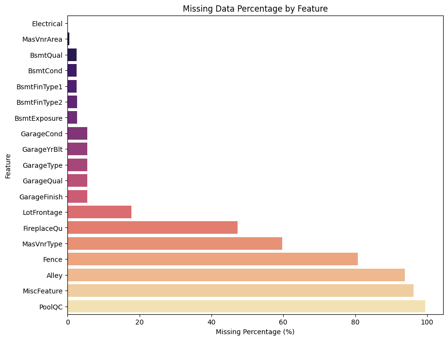
# Plot the impact of missing values on SalePrice
plt.figure(figsize=(12, 8))
sbn.barplot(x='Difference', y='Feature', data=impact_df, palette='coolwarm')
plt.title('Impact of Missing Values on SalePrice')
plt.xlabel('Difference in Mean SalePrice (Present - Missing)')
plt.ylabel('Feature')
plt.show()
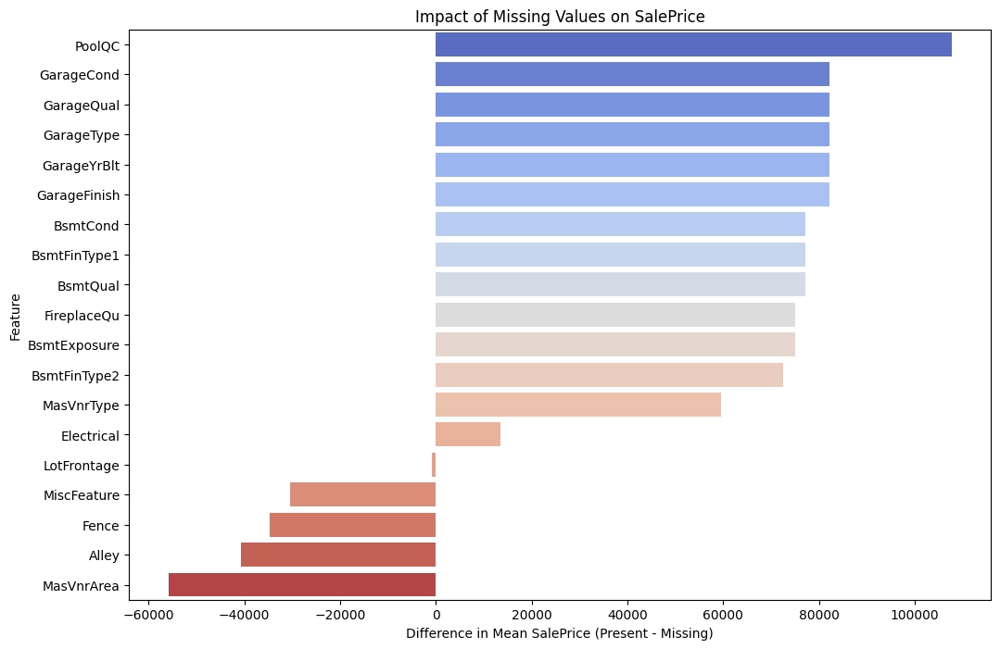
The above insights do not validate or confirm the missing value analysis.
5. Decide Strategy#
>80% missing → drop column (low signal).
<5–10% missing → impute (median/mean for numeric, mode for categorical).
Domain-driven missingness → treat as a category (e.g.,
GarageType=NAmeans no garage).Flagging → add indicator column to capture predictive signal of missingness.
!pip install missingno
Requirement already satisfied: missingno in /usr/local/lib/python3.12/dist-packages (0.5.2)
Requirement already satisfied: numpy in /usr/local/lib/python3.12/dist-packages (from missingno) (2.0.2)
Requirement already satisfied: matplotlib in /usr/local/lib/python3.12/dist-packages (from missingno) (3.10.0)
Requirement already satisfied: scipy in /usr/local/lib/python3.12/dist-packages (from missingno) (1.16.2)
Requirement already satisfied: seaborn in /usr/local/lib/python3.12/dist-packages (from missingno) (0.13.2)
Requirement already satisfied: contourpy>=1.0.1 in /usr/local/lib/python3.12/dist-packages (from matplotlib->missingno) (1.3.3)
Requirement already satisfied: cycler>=0.10 in /usr/local/lib/python3.12/dist-packages (from matplotlib->missingno) (0.12.1)
Requirement already satisfied: fonttools>=4.22.0 in /usr/local/lib/python3.12/dist-packages (from matplotlib->missingno) (4.60.1)
Requirement already satisfied: kiwisolver>=1.3.1 in /usr/local/lib/python3.12/dist-packages (from matplotlib->missingno) (1.4.9)
Requirement already satisfied: packaging>=20.0 in /usr/local/lib/python3.12/dist-packages (from matplotlib->missingno) (25.0)
Requirement already satisfied: pillow>=8 in /usr/local/lib/python3.12/dist-packages (from matplotlib->missingno) (11.3.0)
Requirement already satisfied: pyparsing>=2.3.1 in /usr/local/lib/python3.12/dist-packages (from matplotlib->missingno) (3.2.5)
Requirement already satisfied: python-dateutil>=2.7 in /usr/local/lib/python3.12/dist-packages (from matplotlib->missingno) (2.9.0.post0)
Requirement already satisfied: pandas>=1.2 in /usr/local/lib/python3.12/dist-packages (from seaborn->missingno) (2.2.2)
Requirement already satisfied: pytz>=2020.1 in /usr/local/lib/python3.12/dist-packages (from pandas>=1.2->seaborn->missingno) (2025.2)
Requirement already satisfied: tzdata>=2022.7 in /usr/local/lib/python3.12/dist-packages (from pandas>=1.2->seaborn->missingno) (2025.2)
Requirement already satisfied: six>=1.5 in /usr/local/lib/python3.12/dist-packages (from python-dateutil>=2.7->matplotlib->missingno) (1.17.0)
import missingno as msno
import matplotlib.pyplot as plt
plt.figure(figsize=(8,5))
msno.bar(train_df)
plt.show()
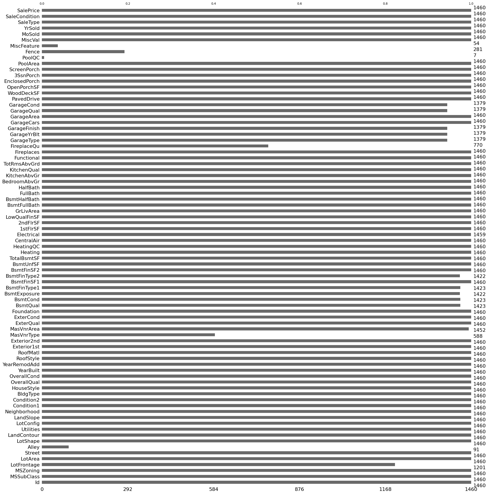
missing_data = train_df.isnull().sum().reset_index()
missing_data = missing_data.rename(columns={"index":"columns",0:"count"})
missing_data['dtype'] = train_df.dtypes.values
missing_data.groupby("dtype").count()
| columns | count | |
|---|---|---|
| dtype | ||
| int64 | 35 | 35 |
| float64 | 3 | 3 |
| object | 43 | 43 |
missing_data['values'] = [train_df[col].value_counts(dropna=True).to_dict() for col in train_df.columns.to_list()]
missing_data.sort_values(by='count',ascending=False).T
| 72 | 74 | 6 | 73 | 25 | 57 | 3 | 63 | 60 | 58 | 59 | 64 | 35 | 32 | 31 | 30 | 33 | 26 | 42 | 14 | 15 | 12 | 11 | 10 | 13 | 8 | 7 | 5 | 4 | 1 | 2 | 0 | 9 | 16 | 29 | 27 | 28 | 37 | 38 | 39 | 34 | 24 | 23 | 22 | 21 | 20 | 17 | 19 | 18 | 48 | 47 | 46 | 45 | 44 | 43 | 41 | 40 | 36 | 56 | 54 | 53 | 52 | 55 | 49 | 50 | 61 | 62 | 51 | 65 | 68 | 69 | 67 | 66 | 71 | 70 | 75 | 76 | 77 | 78 | 79 | 80 | |
|---|---|---|---|---|---|---|---|---|---|---|---|---|---|---|---|---|---|---|---|---|---|---|---|---|---|---|---|---|---|---|---|---|---|---|---|---|---|---|---|---|---|---|---|---|---|---|---|---|---|---|---|---|---|---|---|---|---|---|---|---|---|---|---|---|---|---|---|---|---|---|---|---|---|---|---|---|---|---|---|---|---|
| columns | PoolQC | MiscFeature | Alley | Fence | MasVnrType | FireplaceQu | LotFrontage | GarageQual | GarageFinish | GarageType | GarageYrBlt | GarageCond | BsmtFinType2 | BsmtExposure | BsmtCond | BsmtQual | BsmtFinType1 | MasVnrArea | Electrical | Condition2 | BldgType | Neighborhood | LandSlope | LotConfig | Condition1 | LandContour | LotShape | Street | LotArea | MSSubClass | MSZoning | Id | Utilities | HouseStyle | Foundation | ExterQual | ExterCond | BsmtUnfSF | TotalBsmtSF | Heating | BsmtFinSF1 | Exterior2nd | Exterior1st | RoofMatl | RoofStyle | YearRemodAdd | OverallQual | YearBuilt | OverallCond | BsmtHalfBath | BsmtFullBath | GrLivArea | LowQualFinSF | 2ndFlrSF | 1stFlrSF | CentralAir | HeatingQC | BsmtFinSF2 | Fireplaces | TotRmsAbvGrd | KitchenQual | KitchenAbvGr | Functional | FullBath | HalfBath | GarageCars | GarageArea | BedroomAbvGr | PavedDrive | EnclosedPorch | 3SsnPorch | OpenPorchSF | WoodDeckSF | PoolArea | ScreenPorch | MiscVal | MoSold | YrSold | SaleType | SaleCondition | SalePrice |
| count | 1453 | 1406 | 1369 | 1179 | 872 | 690 | 259 | 81 | 81 | 81 | 81 | 81 | 38 | 38 | 37 | 37 | 37 | 8 | 1 | 0 | 0 | 0 | 0 | 0 | 0 | 0 | 0 | 0 | 0 | 0 | 0 | 0 | 0 | 0 | 0 | 0 | 0 | 0 | 0 | 0 | 0 | 0 | 0 | 0 | 0 | 0 | 0 | 0 | 0 | 0 | 0 | 0 | 0 | 0 | 0 | 0 | 0 | 0 | 0 | 0 | 0 | 0 | 0 | 0 | 0 | 0 | 0 | 0 | 0 | 0 | 0 | 0 | 0 | 0 | 0 | 0 | 0 | 0 | 0 | 0 | 0 |
| dtype | object | object | object | object | object | object | float64 | object | object | object | float64 | object | object | object | object | object | object | float64 | object | object | object | object | object | object | object | object | object | object | int64 | int64 | object | int64 | object | object | object | object | object | int64 | int64 | object | int64 | object | object | object | object | int64 | int64 | int64 | int64 | int64 | int64 | int64 | int64 | int64 | int64 | object | object | int64 | int64 | int64 | object | int64 | object | int64 | int64 | int64 | int64 | int64 | object | int64 | int64 | int64 | int64 | int64 | int64 | int64 | int64 | int64 | object | object | int64 |
| values | {'Gd': 3, 'Ex': 2, 'Fa': 2} | {'Shed': 49, 'Gar2': 2, 'Othr': 2, 'TenC': 1} | {'Grvl': 50, 'Pave': 41} | {'MnPrv': 157, 'GdPrv': 59, 'GdWo': 54, 'MnWw'... | {'BrkFace': 445, 'Stone': 128, 'BrkCmn': 15} | {'Gd': 380, 'TA': 313, 'Fa': 33, 'Ex': 24, 'Po... | {60.0: 143, 70.0: 70, 80.0: 69, 50.0: 57, 75.0... | {'TA': 1311, 'Fa': 48, 'Gd': 14, 'Ex': 3, 'Po'... | {'Unf': 605, 'RFn': 422, 'Fin': 352} | {'Attchd': 870, 'Detchd': 387, 'BuiltIn': 88, ... | {2005.0: 65, 2006.0: 59, 2004.0: 53, 2003.0: 5... | {'TA': 1326, 'Fa': 35, 'Gd': 9, 'Po': 7, 'Ex': 2} | {'Unf': 1256, 'Rec': 54, 'LwQ': 46, 'BLQ': 33,... | {'No': 953, 'Av': 221, 'Gd': 134, 'Mn': 114} | {'TA': 1311, 'Gd': 65, 'Fa': 45, 'Po': 2} | {'TA': 649, 'Gd': 618, 'Ex': 121, 'Fa': 35} | {'Unf': 430, 'GLQ': 418, 'ALQ': 220, 'BLQ': 14... | {0.0: 861, 108.0: 8, 72.0: 8, 180.0: 8, 16.0: ... | {'SBrkr': 1334, 'FuseA': 94, 'FuseF': 27, 'Fus... | {'Norm': 1445, 'Feedr': 6, 'Artery': 2, 'RRNn'... | {'1Fam': 1220, 'TwnhsE': 114, 'Duplex': 52, 'T... | {'NAmes': 225, 'CollgCr': 150, 'OldTown': 113,... | {'Gtl': 1382, 'Mod': 65, 'Sev': 13} | {'Inside': 1052, 'Corner': 263, 'CulDSac': 94,... | {'Norm': 1260, 'Feedr': 81, 'Artery': 48, 'RRA... | {'Lvl': 1311, 'Bnk': 63, 'HLS': 50, 'Low': 36} | {'Reg': 925, 'IR1': 484, 'IR2': 41, 'IR3': 10} | {'Pave': 1454, 'Grvl': 6} | {7200: 25, 9600: 24, 6000: 17, 10800: 14, 8400... | {20: 536, 60: 299, 50: 144, 120: 87, 30: 69, 1... | {'RL': 1151, 'RM': 218, 'FV': 65, 'RH': 16, 'C... | {1460: 1, 1: 1, 2: 1, 3: 1, 1444: 1, 1443: 1, ... | {'AllPub': 1459, 'NoSeWa': 1} | {'1Story': 726, '2Story': 445, '1.5Fin': 154, ... | {'PConc': 647, 'CBlock': 634, 'BrkTil': 146, '... | {'TA': 906, 'Gd': 488, 'Ex': 52, 'Fa': 14} | {'TA': 1282, 'Gd': 146, 'Fa': 28, 'Ex': 3, 'Po... | {0: 118, 728: 9, 384: 8, 300: 7, 572: 7, 600: ... | {0: 37, 864: 35, 672: 17, 912: 15, 1040: 14, 8... | {'GasA': 1428, 'GasW': 18, 'Grav': 7, 'Wall': ... | {0: 467, 24: 12, 16: 9, 686: 5, 936: 5, 20: 5,... | {'VinylSd': 504, 'MetalSd': 214, 'HdBoard': 20... | {'VinylSd': 515, 'HdBoard': 222, 'MetalSd': 22... | {'CompShg': 1434, 'Tar&Grv': 11, 'WdShngl': 6,... | {'Gable': 1141, 'Hip': 286, 'Flat': 13, 'Gambr... | {1950: 178, 2006: 97, 2007: 76, 2005: 73, 2004... | {5: 397, 6: 374, 7: 319, 8: 168, 4: 116, 9: 43... | {2006: 67, 2005: 64, 2004: 54, 2007: 49, 2003:... | {5: 821, 6: 252, 7: 205, 8: 72, 4: 57, 3: 25, ... | {0: 1378, 1: 80, 2: 2} | {0: 856, 1: 588, 2: 15, 3: 1} | {864: 22, 1040: 14, 894: 11, 1456: 10, 848: 10... | {0: 1434, 80: 3, 360: 2, 513: 1, 528: 1, 572: ... | {0: 829, 728: 10, 504: 9, 672: 8, 546: 8, 720:... | {864: 25, 1040: 16, 912: 14, 894: 12, 848: 12,... | {'Y': 1365, 'N': 95} | {'Ex': 741, 'TA': 428, 'Gd': 241, 'Fa': 49, 'P... | {0: 1293, 180: 5, 374: 3, 93: 2, 287: 2, 468: ... | {0: 690, 1: 650, 2: 115, 3: 5} | {6: 402, 7: 329, 5: 275, 8: 187, 4: 97, 9: 75,... | {'TA': 735, 'Gd': 586, 'Ex': 100, 'Fa': 39} | {1: 1392, 2: 65, 3: 2, 0: 1} | {'Typ': 1360, 'Min2': 34, 'Min1': 31, 'Mod': 1... | {2: 768, 1: 650, 3: 33, 0: 9} | {0: 913, 1: 535, 2: 12} | {2: 824, 1: 369, 3: 181, 0: 81, 4: 5} | {0: 81, 440: 49, 576: 47, 240: 38, 484: 34, 52... | {3: 804, 2: 358, 4: 213, 1: 50, 5: 21, 6: 7, 0... | {'Y': 1340, 'N': 90, 'P': 30} | {0: 1252, 112: 15, 96: 6, 144: 5, 192: 5, 120:... | {0: 1436, 168: 3, 180: 2, 144: 2, 216: 2, 130:... | {0: 656, 36: 29, 48: 22, 20: 21, 40: 19, 45: 1... | {0: 761, 192: 38, 100: 36, 144: 33, 120: 31, 1... | {0: 1453, 512: 1, 648: 1, 576: 1, 555: 1, 480:... | {0: 1344, 192: 6, 120: 5, 224: 5, 189: 4, 180:... | {0: 1408, 400: 11, 500: 8, 700: 5, 450: 4, 600... | {6: 253, 7: 234, 5: 204, 4: 141, 8: 122, 3: 10... | {2009: 338, 2007: 329, 2006: 314, 2008: 304, 2... | {'WD': 1267, 'New': 122, 'COD': 43, 'ConLD': 9... | {'Normal': 1198, 'Partial': 125, 'Abnorml': 10... | {140000: 20, 135000: 17, 145000: 14, 155000: 1... |
summary = train_df.isnull().sum().sort_values(ascending=False)
summary = summary[summary >0]
report = pd.DataFrame({
"MissingValues": summary,
"Dtype": train_df[summary.index].dtypes
})
# Add value_counts as dictionary for each column
report["ValueCounts"] = report.index.map(
lambda col: train_df[col].value_counts().to_dict()
)
report
| MissingValues | Dtype | ValueCounts | |
|---|---|---|---|
| PoolQC | 1453 | object | {'Gd': 3, 'Ex': 2, 'Fa': 2} |
| MiscFeature | 1406 | object | {'Shed': 49, 'Gar2': 2, 'Othr': 2, 'TenC': 1} |
| Alley | 1369 | object | {'Grvl': 50, 'Pave': 41} |
| Fence | 1179 | object | {'MnPrv': 157, 'GdPrv': 59, 'GdWo': 54, 'MnWw'... |
| MasVnrType | 872 | object | {'BrkFace': 445, 'Stone': 128, 'BrkCmn': 15} |
| FireplaceQu | 690 | object | {'Gd': 380, 'TA': 313, 'Fa': 33, 'Ex': 24, 'Po... |
| LotFrontage | 259 | float64 | {60.0: 143, 70.0: 70, 80.0: 69, 50.0: 57, 75.0... |
| GarageQual | 81 | object | {'TA': 1311, 'Fa': 48, 'Gd': 14, 'Ex': 3, 'Po'... |
| GarageFinish | 81 | object | {'Unf': 605, 'RFn': 422, 'Fin': 352} |
| GarageType | 81 | object | {'Attchd': 870, 'Detchd': 387, 'BuiltIn': 88, ... |
| GarageYrBlt | 81 | float64 | {2005.0: 65, 2006.0: 59, 2004.0: 53, 2003.0: 5... |
| GarageCond | 81 | object | {'TA': 1326, 'Fa': 35, 'Gd': 9, 'Po': 7, 'Ex': 2} |
| BsmtFinType2 | 38 | object | {'Unf': 1256, 'Rec': 54, 'LwQ': 46, 'BLQ': 33,... |
| BsmtExposure | 38 | object | {'No': 953, 'Av': 221, 'Gd': 134, 'Mn': 114} |
| BsmtCond | 37 | object | {'TA': 1311, 'Gd': 65, 'Fa': 45, 'Po': 2} |
| BsmtQual | 37 | object | {'TA': 649, 'Gd': 618, 'Ex': 121, 'Fa': 35} |
| BsmtFinType1 | 37 | object | {'Unf': 430, 'GLQ': 418, 'ALQ': 220, 'BLQ': 14... |
| MasVnrArea | 8 | float64 | {0.0: 861, 108.0: 8, 72.0: 8, 180.0: 8, 16.0: ... |
| Electrical | 1 | object | {'SBrkr': 1334, 'FuseA': 94, 'FuseF': 27, 'Fus... |
df_before_clean = train_df.copy()
sbn.histplot(df_before_clean['LotFrontage'],kde=True)
<Axes: xlabel='LotFrontage', ylabel='Count'>
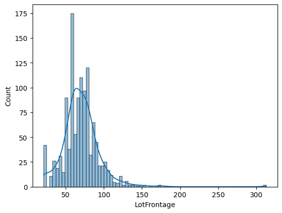
Data Cleaning Pipeline#
category_columns = df_before_clean.select_dtypes(include=['object']).columns.to_list()
num_columns = df_before_clean.select_dtypes(include=['int64','float64']).columns.to_list()
high_cardinal_cat_columns = [col for col in category_columns if df_before_clean[col].nunique() > 10]
low_cardinal_cat_columns = [col for col in category_columns if df_before_clean[col].nunique() <= 10]
text_cols = [col for col in df_before_clean.columns
if df_before_clean[col].dtype == 'object' and df_before_clean[col].dropna().apply(lambda x: isinstance(x, str) and len(x.split()) > 2).any()]
print(text_cols)
[]
from sklearn.base import BaseEstimator, TransformerMixin
from sklearn.impute import SimpleImputer
from sklearn.preprocessing import FunctionTransformer
from sklearn.compose import ColumnTransformer
from sklearn.pipeline import Pipeline
import pandas as pd
import numpy as np
class SkewedImputerMixin:
def _numeric_imputer_strategy(self, df, skew_threshold=0.5):
"""Determine imputation strategy based on skewness for numerical columns"""
# Exclude Id column if present
numeric_cols = df.select_dtypes(include=[np.number]).columns.tolist()
self.numeric_strategies = {}
for col in numeric_cols:
# Handle columns with all NaN values
if df[col].notna().sum() == 0:
self.numeric_strategies[col] = "median"
continue
skewness = df[col].skew()
# Use median for skewed data, mean for normal distribution
strategy = "median" if abs(skewness) > skew_threshold else "mean"
self.numeric_strategies[col] = strategy
return numeric_cols
class MissingValueAnalyzerMixin:
def analyze(self, df):
"""Analyze missing values and determine handling strategy"""
self.data = df.copy()
cols_with_missing = df.columns[df.isnull().sum() > 0]
if len(cols_with_missing) == 0:
print("No missing values found in the dataset.")
self.sparse_columns = []
return pd.DataFrame()
report = pd.DataFrame(
{
"ColumnName": cols_with_missing,
"MissingValues": df[cols_with_missing].isnull().sum().values,
"MissingPercentage": round(
df[cols_with_missing].isnull().mean() * 100, 2
),
"Dtype": df[cols_with_missing].dtypes.values,
"UniqueValues": [
df[col].nunique(dropna=True) for col in cols_with_missing
],
}
).sort_values(by="MissingPercentage", ascending=False)
# Decide strategy based on missing percentage
report["Strategy"] = report["MissingPercentage"].apply(
lambda pct: "Drop Column" if pct > 80 else "Impute"
)
print("SUMMMARY")
print(report)
# Store columns to be dropped
self.sparse_columns.extend(
report.loc[report["Strategy"] == "Drop Column", "ColumnName"].tolist()
)
print(f"Found {len(cols_with_missing)} columns with missing values.")
print(f"Columns to drop (>80% missing): {len(self.sparse_columns)}")
return report
class ImputerPipelineMixin:
def build_imputer_pipeline(self, df, cardinality_threshold=10, skew_threshold=0.5):
"""Build preprocessing pipeline with appropriate imputers for different column types"""
# Drop sparse columns (>80% missing)
df_clean = df.drop(columns=getattr(self, "sparse_columns", []), errors="ignore")
print(f"Dropped {len(getattr(self, 'sparse_columns', []))} sparse columns")
# Get numeric columns and their strategies
numeric_cols = self._numeric_imputer_strategy(df_clean, skew_threshold)
numeric_strategies = getattr(self, "numeric_strategies", {})
# Get categorical columns and split by cardinality
cat_cols = df_clean.select_dtypes(exclude=[np.number]).columns.tolist()
low_card_cols = [
col
for col in cat_cols
if df_clean[col].nunique(dropna=False) <= cardinality_threshold
]
high_card_cols = [
col
for col in cat_cols
if df_clean[col].nunique(dropna=False) > cardinality_threshold
]
print(f"Numeric columns: {len(numeric_cols)}")
print(f"Low cardinality categorical: {len(low_card_cols)}")
print(f"High cardinality categorical: {len(high_card_cols)}")
# Build transformers list
transformers = []
# Numeric transformer with skew-aware imputation
if numeric_cols:
def skewed_imputer(X):
"""Custom imputer that handles skewed numeric data"""
if len(X.shape) == 1:
X = X.reshape(-1, 1)
X_df = pd.DataFrame(X, columns=numeric_cols[: X.shape[1]])
for i, col in enumerate(numeric_cols[: X.shape[1]]):
strategy = numeric_strategies.get(col, "median")
imputer = SimpleImputer(strategy=strategy)
X_df.iloc[:, [i]] = imputer.fit_transform(X_df.iloc[:, [i]])
return X_df.values
numeric_pipeline = FunctionTransformer(skewed_imputer, validate=False)
transformers.append(("numeric", numeric_pipeline, numeric_cols))
# Low cardinality categorical transformer
if low_card_cols:
low_card_pipeline = Pipeline(
[("imputer", SimpleImputer(strategy="most_frequent"))]
)
transformers.append(("low_card", low_card_pipeline, low_card_cols))
# High cardinality categorical transformer
if high_card_cols:
high_card_pipeline = Pipeline(
[("imputer", SimpleImputer(strategy="constant", fill_value="Unknown"))]
)
transformers.append(("high_card", high_card_pipeline, high_card_cols))
# Create ColumnTransformer
if not transformers:
raise ValueError("No valid columns found for preprocessing")
preprocessor = ColumnTransformer(
transformers=transformers,
remainder="drop", # Drop any remaining columns
sparse_threshold=0, # Return dense array
)
# Store pipeline information
self.pipeline_info = {
"numeric": numeric_cols,
"low_card": low_card_cols,
"high_card": high_card_cols,
"dropped": getattr(self, "sparse_columns", []),
"all_processed": numeric_cols + low_card_cols + high_card_cols,
}
return preprocessor
class Preprocessor(
SkewedImputerMixin,
MissingValueAnalyzerMixin,
ImputerPipelineMixin,
BaseEstimator,
TransformerMixin,
):
def __init__(
self,
cardinality_threshold=10,
skew_threshold=0.5,
sparse_columns=[],
retain_columns=[],
):
self.cardinality_threshold = cardinality_threshold
self.skew_threshold = skew_threshold
self.sparse_columns = sparse_columns
self.retain_columns = retain_columns
def fit(self, X, y=None):
"""Fit the preprocessor to the training data"""
if self.sparse_columns and self.sparse_columns in X.columns.to_list():
X.drop(columns=self.sparse_columns, inplace=True, axis=1)
if self.retain_columns:
X = X[self.retain_columns]
if not isinstance(X, pd.DataFrame):
raise ValueError("Input must be a pandas DataFrame")
print(f"🔄 Fitting DataPreprocessor on data with shape: {X.shape}")
try:
# Step 1: Analyze missing values and identify sparse columns
print("Step 1: Analyzing missing values...")
self.analyze(X)
# Step 2: Determine numeric imputation strategies based on skewness
print("Step 2: Determining numeric imputation strategies...")
self._numeric_imputer_strategy(X, self.skew_threshold)
# Step 3: Build and fit the preprocessing pipeline
print("Step 3: Building preprocessing pipeline...")
self.imputer_pipeline = self.build_imputer_pipeline(
X, self.cardinality_threshold, self.skew_threshold
)
print("Step 4: Fitting pipeline...")
self.imputer_pipeline.fit(X)
print("✅ DataPreprocessor fitted successfully!")
return self
except Exception as e:
print(f"❌ Error during fitting: {e}")
raise
def transform(self, X):
"""Transform the input data using the fitted pipeline"""
if not hasattr(self, "imputer_pipeline"):
raise ValueError("Pipeline not fitted. Call fit() first.")
# Apply transformation
X_transformed = self.imputer_pipeline.transform(X)
# Get column names in the correct order
all_cols = self.pipeline_info["all_processed"]
# Validate dimensions
if X_transformed.shape[1] != len(all_cols):
print(f"Warning: Shape mismatch!")
print(f"X_transformed shape: {X_transformed.shape}")
print(f"Expected columns: {len(all_cols)}")
print(f"Using generic column names...")
# all_cols = [f"feature_{i}" for i in range(X_transformed.shape[1])]
# Convert to DataFrame
try:
X_transformed_df = pd.DataFrame(
X_transformed, columns=all_cols, index=X.index
)
X_transformed_df = X_transformed_df.astype(
X.loc[:, X_transformed_df.columns].dtypes.to_dict()
)
print(f"✅ Successfully transformed to DataFrame: {X_transformed_df.shape}")
return X_transformed_df
except Exception as e:
print(f"❌ Error creating DataFrame: {e}")
return X_transformed
def get_feature_names_out(self):
"""Get the names of the output features after transformation"""
if hasattr(self, "pipeline_info"):
return self.pipeline_info["all_processed"]
else:
raise ValueError("Pipeline not fitted yet. Call fit() first.")
def fit_transform(self, X, y=None):
"""Fit the transformer and transform the data in one step"""
return self.fit(X, y).transform(X)
def get_pipeline_summary(self):
"""Get a summary of the preprocessing pipeline"""
if not hasattr(self, "pipeline_info"):
return "Pipeline not fitted yet."
summary = {
"Total features processed": len(self.pipeline_info["all_processed"]),
"Numeric features": len(self.pipeline_info["numeric"]),
"Low cardinality categorical": len(self.pipeline_info["low_card"]),
"High cardinality categorical": len(self.pipeline_info["high_card"]),
"Dropped features": len(self.pipeline_info["dropped"]),
}
return summary
df_before_clean
| Id | MSSubClass | MSZoning | LotFrontage | LotArea | Street | Alley | LotShape | LandContour | Utilities | LotConfig | LandSlope | Neighborhood | Condition1 | Condition2 | BldgType | HouseStyle | OverallQual | OverallCond | YearBuilt | YearRemodAdd | RoofStyle | RoofMatl | Exterior1st | Exterior2nd | MasVnrType | MasVnrArea | ExterQual | ExterCond | Foundation | BsmtQual | BsmtCond | BsmtExposure | BsmtFinType1 | BsmtFinSF1 | BsmtFinType2 | BsmtFinSF2 | BsmtUnfSF | TotalBsmtSF | Heating | HeatingQC | CentralAir | Electrical | 1stFlrSF | 2ndFlrSF | LowQualFinSF | GrLivArea | BsmtFullBath | BsmtHalfBath | FullBath | HalfBath | BedroomAbvGr | KitchenAbvGr | KitchenQual | TotRmsAbvGrd | Functional | Fireplaces | FireplaceQu | GarageType | GarageYrBlt | GarageFinish | GarageCars | GarageArea | GarageQual | GarageCond | PavedDrive | WoodDeckSF | OpenPorchSF | EnclosedPorch | 3SsnPorch | ScreenPorch | PoolArea | PoolQC | Fence | MiscFeature | MiscVal | MoSold | YrSold | SaleType | SaleCondition | SalePrice | |
|---|---|---|---|---|---|---|---|---|---|---|---|---|---|---|---|---|---|---|---|---|---|---|---|---|---|---|---|---|---|---|---|---|---|---|---|---|---|---|---|---|---|---|---|---|---|---|---|---|---|---|---|---|---|---|---|---|---|---|---|---|---|---|---|---|---|---|---|---|---|---|---|---|---|---|---|---|---|---|---|---|---|
| 0 | 1 | 60 | RL | 65.0 | 8450 | Pave | NaN | Reg | Lvl | AllPub | Inside | Gtl | CollgCr | Norm | Norm | 1Fam | 2Story | 7 | 5 | 2003 | 2003 | Gable | CompShg | VinylSd | VinylSd | BrkFace | 196.0 | Gd | TA | PConc | Gd | TA | No | GLQ | 706 | Unf | 0 | 150 | 856 | GasA | Ex | Y | SBrkr | 856 | 854 | 0 | 1710 | 1 | 0 | 2 | 1 | 3 | 1 | Gd | 8 | Typ | 0 | NaN | Attchd | 2003.0 | RFn | 2 | 548 | TA | TA | Y | 0 | 61 | 0 | 0 | 0 | 0 | NaN | NaN | NaN | 0 | 2 | 2008 | WD | Normal | 208500 |
| 1 | 2 | 20 | RL | 80.0 | 9600 | Pave | NaN | Reg | Lvl | AllPub | FR2 | Gtl | Veenker | Feedr | Norm | 1Fam | 1Story | 6 | 8 | 1976 | 1976 | Gable | CompShg | MetalSd | MetalSd | NaN | 0.0 | TA | TA | CBlock | Gd | TA | Gd | ALQ | 978 | Unf | 0 | 284 | 1262 | GasA | Ex | Y | SBrkr | 1262 | 0 | 0 | 1262 | 0 | 1 | 2 | 0 | 3 | 1 | TA | 6 | Typ | 1 | TA | Attchd | 1976.0 | RFn | 2 | 460 | TA | TA | Y | 298 | 0 | 0 | 0 | 0 | 0 | NaN | NaN | NaN | 0 | 5 | 2007 | WD | Normal | 181500 |
| 2 | 3 | 60 | RL | 68.0 | 11250 | Pave | NaN | IR1 | Lvl | AllPub | Inside | Gtl | CollgCr | Norm | Norm | 1Fam | 2Story | 7 | 5 | 2001 | 2002 | Gable | CompShg | VinylSd | VinylSd | BrkFace | 162.0 | Gd | TA | PConc | Gd | TA | Mn | GLQ | 486 | Unf | 0 | 434 | 920 | GasA | Ex | Y | SBrkr | 920 | 866 | 0 | 1786 | 1 | 0 | 2 | 1 | 3 | 1 | Gd | 6 | Typ | 1 | TA | Attchd | 2001.0 | RFn | 2 | 608 | TA | TA | Y | 0 | 42 | 0 | 0 | 0 | 0 | NaN | NaN | NaN | 0 | 9 | 2008 | WD | Normal | 223500 |
| 3 | 4 | 70 | RL | 60.0 | 9550 | Pave | NaN | IR1 | Lvl | AllPub | Corner | Gtl | Crawfor | Norm | Norm | 1Fam | 2Story | 7 | 5 | 1915 | 1970 | Gable | CompShg | Wd Sdng | Wd Shng | NaN | 0.0 | TA | TA | BrkTil | TA | Gd | No | ALQ | 216 | Unf | 0 | 540 | 756 | GasA | Gd | Y | SBrkr | 961 | 756 | 0 | 1717 | 1 | 0 | 1 | 0 | 3 | 1 | Gd | 7 | Typ | 1 | Gd | Detchd | 1998.0 | Unf | 3 | 642 | TA | TA | Y | 0 | 35 | 272 | 0 | 0 | 0 | NaN | NaN | NaN | 0 | 2 | 2006 | WD | Abnorml | 140000 |
| 4 | 5 | 60 | RL | 84.0 | 14260 | Pave | NaN | IR1 | Lvl | AllPub | FR2 | Gtl | NoRidge | Norm | Norm | 1Fam | 2Story | 8 | 5 | 2000 | 2000 | Gable | CompShg | VinylSd | VinylSd | BrkFace | 350.0 | Gd | TA | PConc | Gd | TA | Av | GLQ | 655 | Unf | 0 | 490 | 1145 | GasA | Ex | Y | SBrkr | 1145 | 1053 | 0 | 2198 | 1 | 0 | 2 | 1 | 4 | 1 | Gd | 9 | Typ | 1 | TA | Attchd | 2000.0 | RFn | 3 | 836 | TA | TA | Y | 192 | 84 | 0 | 0 | 0 | 0 | NaN | NaN | NaN | 0 | 12 | 2008 | WD | Normal | 250000 |
| ... | ... | ... | ... | ... | ... | ... | ... | ... | ... | ... | ... | ... | ... | ... | ... | ... | ... | ... | ... | ... | ... | ... | ... | ... | ... | ... | ... | ... | ... | ... | ... | ... | ... | ... | ... | ... | ... | ... | ... | ... | ... | ... | ... | ... | ... | ... | ... | ... | ... | ... | ... | ... | ... | ... | ... | ... | ... | ... | ... | ... | ... | ... | ... | ... | ... | ... | ... | ... | ... | ... | ... | ... | ... | ... | ... | ... | ... | ... | ... | ... | ... |
| 1455 | 1456 | 60 | RL | 62.0 | 7917 | Pave | NaN | Reg | Lvl | AllPub | Inside | Gtl | Gilbert | Norm | Norm | 1Fam | 2Story | 6 | 5 | 1999 | 2000 | Gable | CompShg | VinylSd | VinylSd | NaN | 0.0 | TA | TA | PConc | Gd | TA | No | Unf | 0 | Unf | 0 | 953 | 953 | GasA | Ex | Y | SBrkr | 953 | 694 | 0 | 1647 | 0 | 0 | 2 | 1 | 3 | 1 | TA | 7 | Typ | 1 | TA | Attchd | 1999.0 | RFn | 2 | 460 | TA | TA | Y | 0 | 40 | 0 | 0 | 0 | 0 | NaN | NaN | NaN | 0 | 8 | 2007 | WD | Normal | 175000 |
| 1456 | 1457 | 20 | RL | 85.0 | 13175 | Pave | NaN | Reg | Lvl | AllPub | Inside | Gtl | NWAmes | Norm | Norm | 1Fam | 1Story | 6 | 6 | 1978 | 1988 | Gable | CompShg | Plywood | Plywood | Stone | 119.0 | TA | TA | CBlock | Gd | TA | No | ALQ | 790 | Rec | 163 | 589 | 1542 | GasA | TA | Y | SBrkr | 2073 | 0 | 0 | 2073 | 1 | 0 | 2 | 0 | 3 | 1 | TA | 7 | Min1 | 2 | TA | Attchd | 1978.0 | Unf | 2 | 500 | TA | TA | Y | 349 | 0 | 0 | 0 | 0 | 0 | NaN | MnPrv | NaN | 0 | 2 | 2010 | WD | Normal | 210000 |
| 1457 | 1458 | 70 | RL | 66.0 | 9042 | Pave | NaN | Reg | Lvl | AllPub | Inside | Gtl | Crawfor | Norm | Norm | 1Fam | 2Story | 7 | 9 | 1941 | 2006 | Gable | CompShg | CemntBd | CmentBd | NaN | 0.0 | Ex | Gd | Stone | TA | Gd | No | GLQ | 275 | Unf | 0 | 877 | 1152 | GasA | Ex | Y | SBrkr | 1188 | 1152 | 0 | 2340 | 0 | 0 | 2 | 0 | 4 | 1 | Gd | 9 | Typ | 2 | Gd | Attchd | 1941.0 | RFn | 1 | 252 | TA | TA | Y | 0 | 60 | 0 | 0 | 0 | 0 | NaN | GdPrv | Shed | 2500 | 5 | 2010 | WD | Normal | 266500 |
| 1458 | 1459 | 20 | RL | 68.0 | 9717 | Pave | NaN | Reg | Lvl | AllPub | Inside | Gtl | NAmes | Norm | Norm | 1Fam | 1Story | 5 | 6 | 1950 | 1996 | Hip | CompShg | MetalSd | MetalSd | NaN | 0.0 | TA | TA | CBlock | TA | TA | Mn | GLQ | 49 | Rec | 1029 | 0 | 1078 | GasA | Gd | Y | FuseA | 1078 | 0 | 0 | 1078 | 1 | 0 | 1 | 0 | 2 | 1 | Gd | 5 | Typ | 0 | NaN | Attchd | 1950.0 | Unf | 1 | 240 | TA | TA | Y | 366 | 0 | 112 | 0 | 0 | 0 | NaN | NaN | NaN | 0 | 4 | 2010 | WD | Normal | 142125 |
| 1459 | 1460 | 20 | RL | 75.0 | 9937 | Pave | NaN | Reg | Lvl | AllPub | Inside | Gtl | Edwards | Norm | Norm | 1Fam | 1Story | 5 | 6 | 1965 | 1965 | Gable | CompShg | HdBoard | HdBoard | NaN | 0.0 | Gd | TA | CBlock | TA | TA | No | BLQ | 830 | LwQ | 290 | 136 | 1256 | GasA | Gd | Y | SBrkr | 1256 | 0 | 0 | 1256 | 1 | 0 | 1 | 1 | 3 | 1 | TA | 6 | Typ | 0 | NaN | Attchd | 1965.0 | Fin | 1 | 276 | TA | TA | Y | 736 | 68 | 0 | 0 | 0 | 0 | NaN | NaN | NaN | 0 | 6 | 2008 | WD | Normal | 147500 |
1460 rows × 81 columns
preprocessor = Preprocessor(skew_threshold=0.5, cardinality_threshold=10,sparse_columns=['Id'])
df_clean = preprocessor.fit_transform(df_before_clean)
# print(cleaned_df.dtypes)
df_clean.isnull().sum()
🔄 Fitting DataPreprocessor on data with shape: (1460, 81)
Step 1: Analyzing missing values...
SUMMMARY
ColumnName MissingValues MissingPercentage Dtype \
PoolQC PoolQC 1453 99.52 object
MiscFeature MiscFeature 1406 96.30 object
Alley Alley 1369 93.77 object
Fence Fence 1179 80.75 object
MasVnrType MasVnrType 872 59.73 object
FireplaceQu FireplaceQu 690 47.26 object
LotFrontage LotFrontage 259 17.74 float64
GarageType GarageType 81 5.55 object
GarageYrBlt GarageYrBlt 81 5.55 float64
GarageFinish GarageFinish 81 5.55 object
GarageQual GarageQual 81 5.55 object
GarageCond GarageCond 81 5.55 object
BsmtExposure BsmtExposure 38 2.60 object
BsmtFinType2 BsmtFinType2 38 2.60 object
BsmtQual BsmtQual 37 2.53 object
BsmtCond BsmtCond 37 2.53 object
BsmtFinType1 BsmtFinType1 37 2.53 object
MasVnrArea MasVnrArea 8 0.55 float64
Electrical Electrical 1 0.07 object
UniqueValues Strategy
PoolQC 3 Drop Column
MiscFeature 4 Drop Column
Alley 2 Drop Column
Fence 4 Drop Column
MasVnrType 3 Impute
FireplaceQu 5 Impute
LotFrontage 110 Impute
GarageType 6 Impute
GarageYrBlt 97 Impute
GarageFinish 3 Impute
GarageQual 5 Impute
GarageCond 5 Impute
BsmtExposure 4 Impute
BsmtFinType2 6 Impute
BsmtQual 4 Impute
BsmtCond 4 Impute
BsmtFinType1 6 Impute
MasVnrArea 327 Impute
Electrical 5 Impute
Found 19 columns with missing values.
Columns to drop (>80% missing): 5
Step 2: Determining numeric imputation strategies...
Step 3: Building preprocessing pipeline...
Dropped 5 sparse columns
Numeric columns: 37
Low cardinality categorical: 36
High cardinality categorical: 3
Step 4: Fitting pipeline...
✅ DataPreprocessor fitted successfully!
✅ Successfully transformed to DataFrame: (1460, 76)
| 0 | |
|---|---|
| MSSubClass | 0 |
| LotFrontage | 0 |
| LotArea | 0 |
| OverallQual | 0 |
| OverallCond | 0 |
| ... | ... |
| SaleType | 0 |
| SaleCondition | 0 |
| Neighborhood | 0 |
| Exterior1st | 0 |
| Exterior2nd | 0 |
76 rows × 1 columns
df_clean
| MSSubClass | LotFrontage | LotArea | OverallQual | OverallCond | YearBuilt | YearRemodAdd | MasVnrArea | BsmtFinSF1 | BsmtFinSF2 | BsmtUnfSF | TotalBsmtSF | 1stFlrSF | 2ndFlrSF | LowQualFinSF | GrLivArea | BsmtFullBath | BsmtHalfBath | FullBath | HalfBath | BedroomAbvGr | KitchenAbvGr | TotRmsAbvGrd | Fireplaces | GarageYrBlt | GarageCars | GarageArea | WoodDeckSF | OpenPorchSF | EnclosedPorch | 3SsnPorch | ScreenPorch | PoolArea | MiscVal | MoSold | YrSold | SalePrice | MSZoning | Street | LotShape | LandContour | Utilities | LotConfig | LandSlope | Condition1 | Condition2 | BldgType | HouseStyle | RoofStyle | RoofMatl | MasVnrType | ExterQual | ExterCond | Foundation | BsmtQual | BsmtCond | BsmtExposure | BsmtFinType1 | BsmtFinType2 | Heating | HeatingQC | CentralAir | Electrical | KitchenQual | Functional | FireplaceQu | GarageType | GarageFinish | GarageQual | GarageCond | PavedDrive | SaleType | SaleCondition | Neighborhood | Exterior1st | Exterior2nd | |
|---|---|---|---|---|---|---|---|---|---|---|---|---|---|---|---|---|---|---|---|---|---|---|---|---|---|---|---|---|---|---|---|---|---|---|---|---|---|---|---|---|---|---|---|---|---|---|---|---|---|---|---|---|---|---|---|---|---|---|---|---|---|---|---|---|---|---|---|---|---|---|---|---|---|---|---|---|
| 0 | 60 | 65.0 | 8450 | 7 | 5 | 2003 | 2003 | 196.0 | 706 | 0 | 150 | 856 | 856 | 854 | 0 | 1710 | 1 | 0 | 2 | 1 | 3 | 1 | 8 | 0 | 2003.0 | 2 | 548 | 0 | 61 | 0 | 0 | 0 | 0 | 0 | 2 | 2008 | 208500 | RL | Pave | Reg | Lvl | AllPub | Inside | Gtl | Norm | Norm | 1Fam | 2Story | Gable | CompShg | BrkFace | Gd | TA | PConc | Gd | TA | No | GLQ | Unf | GasA | Ex | Y | SBrkr | Gd | Typ | Gd | Attchd | RFn | TA | TA | Y | WD | Normal | CollgCr | VinylSd | VinylSd |
| 1 | 20 | 80.0 | 9600 | 6 | 8 | 1976 | 1976 | 0.0 | 978 | 0 | 284 | 1262 | 1262 | 0 | 0 | 1262 | 0 | 1 | 2 | 0 | 3 | 1 | 6 | 1 | 1976.0 | 2 | 460 | 298 | 0 | 0 | 0 | 0 | 0 | 0 | 5 | 2007 | 181500 | RL | Pave | Reg | Lvl | AllPub | FR2 | Gtl | Feedr | Norm | 1Fam | 1Story | Gable | CompShg | BrkFace | TA | TA | CBlock | Gd | TA | Gd | ALQ | Unf | GasA | Ex | Y | SBrkr | TA | Typ | TA | Attchd | RFn | TA | TA | Y | WD | Normal | Veenker | MetalSd | MetalSd |
| 2 | 60 | 68.0 | 11250 | 7 | 5 | 2001 | 2002 | 162.0 | 486 | 0 | 434 | 920 | 920 | 866 | 0 | 1786 | 1 | 0 | 2 | 1 | 3 | 1 | 6 | 1 | 2001.0 | 2 | 608 | 0 | 42 | 0 | 0 | 0 | 0 | 0 | 9 | 2008 | 223500 | RL | Pave | IR1 | Lvl | AllPub | Inside | Gtl | Norm | Norm | 1Fam | 2Story | Gable | CompShg | BrkFace | Gd | TA | PConc | Gd | TA | Mn | GLQ | Unf | GasA | Ex | Y | SBrkr | Gd | Typ | TA | Attchd | RFn | TA | TA | Y | WD | Normal | CollgCr | VinylSd | VinylSd |
| 3 | 70 | 60.0 | 9550 | 7 | 5 | 1915 | 1970 | 0.0 | 216 | 0 | 540 | 756 | 961 | 756 | 0 | 1717 | 1 | 0 | 1 | 0 | 3 | 1 | 7 | 1 | 1998.0 | 3 | 642 | 0 | 35 | 272 | 0 | 0 | 0 | 0 | 2 | 2006 | 140000 | RL | Pave | IR1 | Lvl | AllPub | Corner | Gtl | Norm | Norm | 1Fam | 2Story | Gable | CompShg | BrkFace | TA | TA | BrkTil | TA | Gd | No | ALQ | Unf | GasA | Gd | Y | SBrkr | Gd | Typ | Gd | Detchd | Unf | TA | TA | Y | WD | Abnorml | Crawfor | Wd Sdng | Wd Shng |
| 4 | 60 | 84.0 | 14260 | 8 | 5 | 2000 | 2000 | 350.0 | 655 | 0 | 490 | 1145 | 1145 | 1053 | 0 | 2198 | 1 | 0 | 2 | 1 | 4 | 1 | 9 | 1 | 2000.0 | 3 | 836 | 192 | 84 | 0 | 0 | 0 | 0 | 0 | 12 | 2008 | 250000 | RL | Pave | IR1 | Lvl | AllPub | FR2 | Gtl | Norm | Norm | 1Fam | 2Story | Gable | CompShg | BrkFace | Gd | TA | PConc | Gd | TA | Av | GLQ | Unf | GasA | Ex | Y | SBrkr | Gd | Typ | TA | Attchd | RFn | TA | TA | Y | WD | Normal | NoRidge | VinylSd | VinylSd |
| ... | ... | ... | ... | ... | ... | ... | ... | ... | ... | ... | ... | ... | ... | ... | ... | ... | ... | ... | ... | ... | ... | ... | ... | ... | ... | ... | ... | ... | ... | ... | ... | ... | ... | ... | ... | ... | ... | ... | ... | ... | ... | ... | ... | ... | ... | ... | ... | ... | ... | ... | ... | ... | ... | ... | ... | ... | ... | ... | ... | ... | ... | ... | ... | ... | ... | ... | ... | ... | ... | ... | ... | ... | ... | ... | ... | ... |
| 1455 | 60 | 62.0 | 7917 | 6 | 5 | 1999 | 2000 | 0.0 | 0 | 0 | 953 | 953 | 953 | 694 | 0 | 1647 | 0 | 0 | 2 | 1 | 3 | 1 | 7 | 1 | 1999.0 | 2 | 460 | 0 | 40 | 0 | 0 | 0 | 0 | 0 | 8 | 2007 | 175000 | RL | Pave | Reg | Lvl | AllPub | Inside | Gtl | Norm | Norm | 1Fam | 2Story | Gable | CompShg | BrkFace | TA | TA | PConc | Gd | TA | No | Unf | Unf | GasA | Ex | Y | SBrkr | TA | Typ | TA | Attchd | RFn | TA | TA | Y | WD | Normal | Gilbert | VinylSd | VinylSd |
| 1456 | 20 | 85.0 | 13175 | 6 | 6 | 1978 | 1988 | 119.0 | 790 | 163 | 589 | 1542 | 2073 | 0 | 0 | 2073 | 1 | 0 | 2 | 0 | 3 | 1 | 7 | 2 | 1978.0 | 2 | 500 | 349 | 0 | 0 | 0 | 0 | 0 | 0 | 2 | 2010 | 210000 | RL | Pave | Reg | Lvl | AllPub | Inside | Gtl | Norm | Norm | 1Fam | 1Story | Gable | CompShg | Stone | TA | TA | CBlock | Gd | TA | No | ALQ | Rec | GasA | TA | Y | SBrkr | TA | Min1 | TA | Attchd | Unf | TA | TA | Y | WD | Normal | NWAmes | Plywood | Plywood |
| 1457 | 70 | 66.0 | 9042 | 7 | 9 | 1941 | 2006 | 0.0 | 275 | 0 | 877 | 1152 | 1188 | 1152 | 0 | 2340 | 0 | 0 | 2 | 0 | 4 | 1 | 9 | 2 | 1941.0 | 1 | 252 | 0 | 60 | 0 | 0 | 0 | 0 | 2500 | 5 | 2010 | 266500 | RL | Pave | Reg | Lvl | AllPub | Inside | Gtl | Norm | Norm | 1Fam | 2Story | Gable | CompShg | BrkFace | Ex | Gd | Stone | TA | Gd | No | GLQ | Unf | GasA | Ex | Y | SBrkr | Gd | Typ | Gd | Attchd | RFn | TA | TA | Y | WD | Normal | Crawfor | CemntBd | CmentBd |
| 1458 | 20 | 68.0 | 9717 | 5 | 6 | 1950 | 1996 | 0.0 | 49 | 1029 | 0 | 1078 | 1078 | 0 | 0 | 1078 | 1 | 0 | 1 | 0 | 2 | 1 | 5 | 0 | 1950.0 | 1 | 240 | 366 | 0 | 112 | 0 | 0 | 0 | 0 | 4 | 2010 | 142125 | RL | Pave | Reg | Lvl | AllPub | Inside | Gtl | Norm | Norm | 1Fam | 1Story | Hip | CompShg | BrkFace | TA | TA | CBlock | TA | TA | Mn | GLQ | Rec | GasA | Gd | Y | FuseA | Gd | Typ | Gd | Attchd | Unf | TA | TA | Y | WD | Normal | NAmes | MetalSd | MetalSd |
| 1459 | 20 | 75.0 | 9937 | 5 | 6 | 1965 | 1965 | 0.0 | 830 | 290 | 136 | 1256 | 1256 | 0 | 0 | 1256 | 1 | 0 | 1 | 1 | 3 | 1 | 6 | 0 | 1965.0 | 1 | 276 | 736 | 68 | 0 | 0 | 0 | 0 | 0 | 6 | 2008 | 147500 | RL | Pave | Reg | Lvl | AllPub | Inside | Gtl | Norm | Norm | 1Fam | 1Story | Gable | CompShg | BrkFace | Gd | TA | CBlock | TA | TA | No | BLQ | LwQ | GasA | Gd | Y | SBrkr | TA | Typ | Gd | Attchd | Fin | TA | TA | Y | WD | Normal | Edwards | HdBoard | HdBoard |
1460 rows × 76 columns
df_clean.isnull().sum()
| 0 | |
|---|---|
| MSSubClass | 0 |
| LotFrontage | 0 |
| LotArea | 0 |
| OverallQual | 0 |
| OverallCond | 0 |
| ... | ... |
| SaleType | 0 |
| SaleCondition | 0 |
| Neighborhood | 0 |
| Exterior1st | 0 |
| Exterior2nd | 0 |
76 rows × 1 columns
import seaborn as sns
import matplotlib.pyplot as plt
yearbuiltbin = pd.cut(
df_clean["YearBuilt"],
bins=range(1870, 2015, 5), # bins of 5 years
labels=[f"{y}-{y+5}" for y in range(1870, 2010, 5)]
)
plt.figure(figsize=(12, 6))
sns.barplot(
x=yearbuiltbin,
y=df_clean['SalePrice'],
errorbar=None, # removes confidence intervals if not needed
estimator="mean" # default is mean, but you can set "median"
)
plt.xticks(rotation=90) # rotate labels if too many years
plt.title("Average Sale Price by Year Built", fontsize=14)
plt.xlabel("Year Built")
plt.ylabel("Average Sale Price")
plt.show()
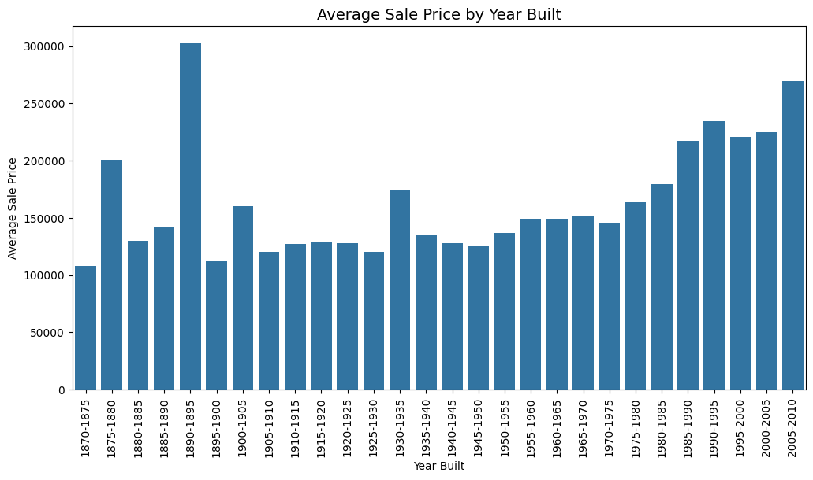
summary = df_clean.isnull().sum()
summary[summary > 0]
| 0 |
|---|
Feature analysis with Data Visualization#
Univariate Analysis#
Numerical Feature
num_columns = df_clean.select_dtypes(include=['int64','float64','int32']).columns.to_list()
n = len(num_columns)
n_cols = int(np.ceil(np.sqrt(n)))
n_rows = int(np.ceil(n / n_cols))
# Flatten for indexing
# axes = axes.flatten()
n_cols = int(np.ceil(np.sqrt(n)))
n_rows = int(np.ceil(n / n_cols))
fig = plt.figure(figsize=(4*n_cols, 3*n_rows*2))
gs = fig.add_gridspec(n_rows*2, n_cols, hspace=0.4)
for i, col in enumerate(num_columns):
r = (i // n_cols) * 2 # row start (two rows per feature)
c = i % n_cols
# Determine shared x-axis limits
xmin, xmax = df_clean[col].min(), df_clean[col].max()
# Boxplot (top)
ax_box = fig.add_subplot(gs[r, c])
sns.boxplot(x=df_clean[col], ax=ax_box, color="lightblue")
ax_box.set_title(f"{col} - Box")
ax_box.set_xlim(xmin, xmax)
ax_box.set_xlabel("")
# Histogram (bottom)
ax_hist = fig.add_subplot(gs[r+1, c], sharex=ax_box)
sns.histplot(df_clean[col], kde=True, ax=ax_hist, color="steelblue")
ax_hist.set_title(f"{col} - Hist")
ax_hist.set_xlim(xmin, xmax)
plt.tight_layout()
plt.show()
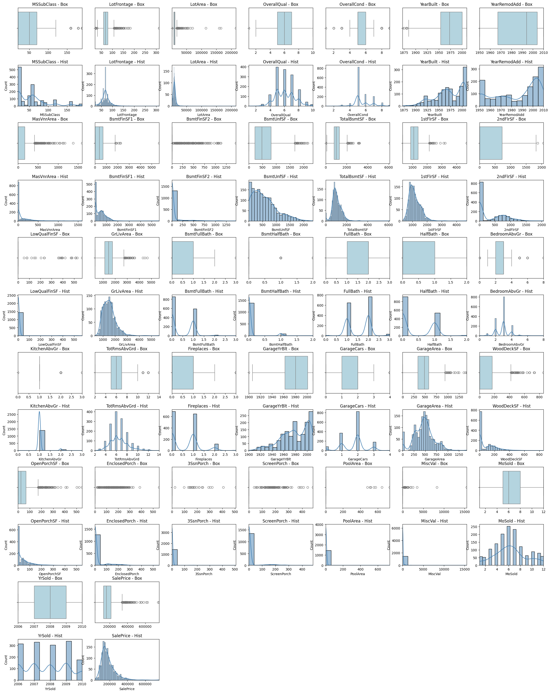
The plots show that none of the features, including the target SalePrice, follow a normal distribution. These need transformation into near-normal distributions using methods such as Log, Box-Cox, or Yeo–Johnson. Before applying transformations, identify the most correlated features
Categorical Feature
category_columns = df_clean.select_dtypes(include=['object']).columns.to_list()
num_columns = df_clean.select_dtypes(include=['int64','float64','int32']).columns.to_list()
high_cardinal_cat_columns = [col for col in category_columns if df_clean[col].nunique() > 10]
low_cardinal_cat_columns = [col for col in category_columns if df_clean[col].nunique() <= 10]
category_columns[0]
'MSZoning'
import matplotlib.pyplot as plt
import seaborn as sns
import pandas as pd
import numpy as np
n = len(category_columns)
# Determine rows and columns dynamically
n_cols = 4
n_rows = int(np.ceil(n / n_cols))
fig, axes = plt.subplots(n_rows, n_cols, figsize=(5*n_cols, 4*n_rows))
axes = axes.flatten()
for i, col in enumerate(category_columns):
sns.countplot(x=col, data=df_clean, ax=axes[i], palette='pastel')
axes[i].set_title(f'{col} - Count')
axes[i].set_xlabel('')
axes[i].set_ylabel('Count')
axes[i].tick_params(axis='x', rotation=45)
# Remove unused axes
for j in range(i+1, len(axes)):
fig.delaxes(axes[j])
plt.tight_layout()
fig.savefig("new.png")
plt.show()
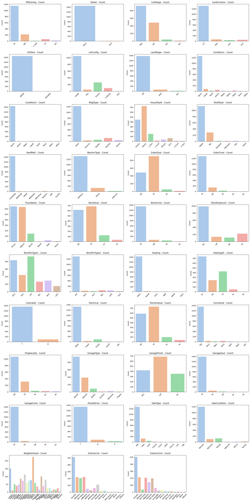
Features that are more evenly distributed have a higher potential to serve as effective predictors.
The countplots visualize the distribution of values within each categorical feature. Key observations include:
Dominant Categories: Many features have a single category that appears much more frequently than others (e.g., ‘MSZoning’ is dominated by ‘RL’). These features may have limited predictive power on their own but could be useful when combined with other features.
Diverse Distributions: Some features, like ‘Neighborhood’, ‘HouseStyle’, and exterior related columns, show a more even distribution across their categories. These features are likely to be more informative for predicting
SalePrice.Potential Issues: Some categories have very few instances. These rare categories might need to be grouped with other categories or handled specifically during feature engineering to avoid issues with model training.
Overall, these plots help us understand the composition of our categorical data and identify potential areas for feature engineering or further analysis.
Target Analysis#
sbn.histplot(df_clean['SalePrice'],kde=True)
<Axes: xlabel='SalePrice', ylabel='Count'>
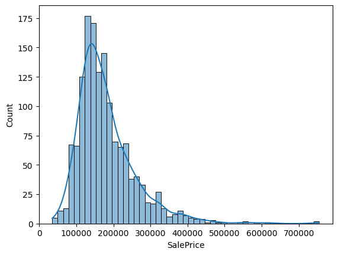
Insights
SalePricedata points is right skewedThis violates one of the key assumptions of regression, which may affect the validity of the model.
Hence, transformations such as Box-Cox or Log Transformation will be applied in the forthcoming stage.
Correlation Analysis#
Numerical Features#
num_features = df_clean.select_dtypes(include=['int64','float64','int32']).columns.to_list()
correlation = df_clean[num_features].corr(method='spearman')['SalePrice'].sort_values(ascending=False)
corr_num_df = correlation.to_frame(name="relevance_with_price")
plt.figure(figsize=(12,8))
sns.heatmap(corr_num_df, annot=True, cmap='coolwarm')
plt.title("Spearman Correlation with SalePrice")
plt.show()
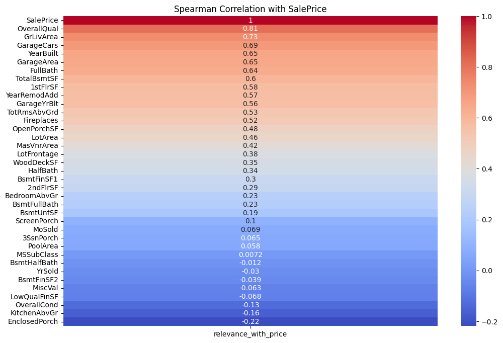
relevant_num_features = corr_num_df[(corr_num_df['relevance_with_price'] > 0.7) & (corr_num_df.index != "SalePrice")].index.to_list()
relevant_num_features
['OverallQual', 'GrLivArea']
Categorical Features#
Method |
Feature Type |
Target Type |
Pros |
Cons |
|---|---|---|---|---|
ANOVA / F-test |
Categorical |
Numeric |
Simple, interpretable |
Only significance, not strength |
Correlation ratio η² |
Categorical |
Numeric |
Measures explained variance |
Slightly complex |
Mutual Information |
Categorical |
Numeric |
Captures non-linear relationships |
Needs encoding, no direction |
Point Biserial |
Binary categorical |
Numeric |
Simple correlation |
Only binary categories |
Spearman / Kendall |
Ordinal |
Numeric |
Captures monotonic trends |
Not for nominal |
Tree-based importance |
Any |
Numeric |
Non-linear, mixed types |
Model-dependent |
Permutation importance |
Any |
Numeric |
Model-agnostic |
Slower |
Chi-squared |
Categorical |
Categorical (or binned numeric) |
Statistical dependence |
Needs target binning |
import pandas as pd
import seaborn as sns
import matplotlib.pyplot as plt
# Example categorical features
# Determine number of rows and columns for subplots
n_features = len(category_columns)
n_cols = 2 # number of columns in the grid
n_rows = (n_features + n_cols - 1) // n_cols # ceil division
fig, axes = plt.subplots(n_rows, 3, figsize=(12, n_rows*4))
axes = axes.flatten() # flatten in case of single row/column
for i, cat in enumerate(category_columns):
sns.boxplot(x=df_clean[cat], y=df_clean['SalePrice'], ax=axes[i])
axes[i].set_title(f'{cat} vs SalePrice')
axes[i].tick_params(axis='x', rotation=45)
# Turn off any unused subplots
for j in range(i+1, len(axes)):
fig.delaxes(axes[j])
plt.tight_layout()
plt.show()
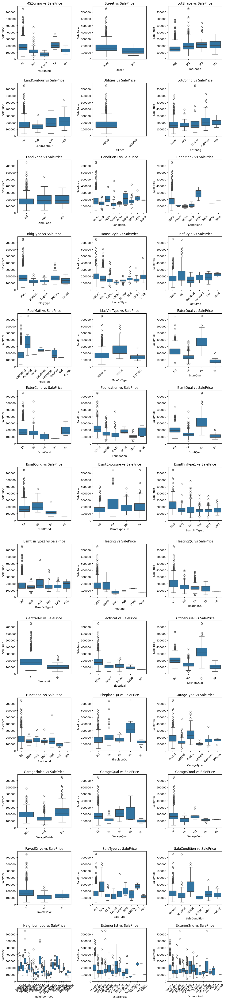
plt.figure(figsize=(20, 10))
sbn.boxplot(x=df_clean['BldgType'],y=df_clean['SalePrice'])
plt.xticks(rotation=45)
plt.show()
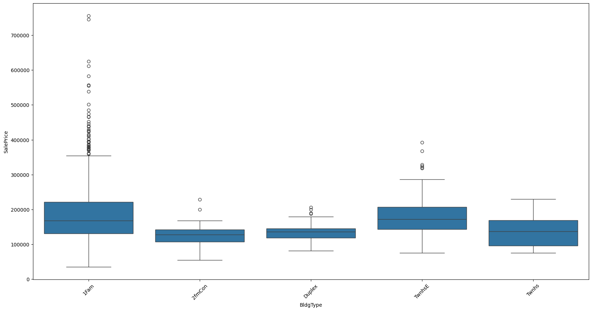
plt.figure(figsize=(20, 10))
sbn.boxplot(x=df_clean['Neighborhood'],y=df_clean['SalePrice'])
plt.xticks(rotation=45)
plt.show()
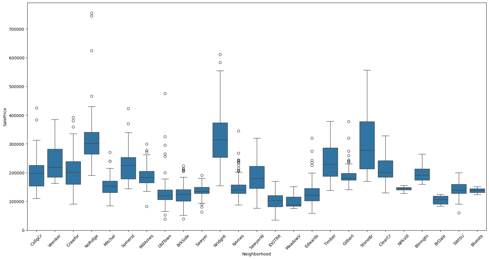
Method |
Type of Categorical Variable |
Type of Numeric Variable |
When to Use |
|---|---|---|---|
Point Biserial Correlation |
Binary |
Continuous |
Two categories |
ANOVA |
Nominal |
Continuous |
More than two categories |
Kruskal-Wallis H Test |
Nominal |
Continuous |
Non-parametric, more than two categories |
Chi-Squared Test |
Nominal |
Categorical (binned) |
Relationship between two categorical variables |
Spearman’s Rank Correlation |
Ordinal |
Continuous |
Ordered categories |
import pandas as pd
import numpy as np
import matplotlib.pyplot as plt
import seaborn as sns
from sklearn.base import BaseEstimator, TransformerMixin
from scipy.stats import f_oneway
class FeatureSelector(BaseEstimator, TransformerMixin):
"""
Combines numeric and categorical correlation analysis for regression.
Parameters
----------
target : str
Name of the target column.
eta_threshold : float, default=0.25
Minimum correlation ratio (eta squared) to select categorical features.
pvalue_threshold : float, default=0.05
ANOVA p-value threshold to select categorical features.
visualize : bool, default=False
If True, plots numeric and categorical correlations.
"""
def __init__(
self,
target=None,
num_feat_corr_threshold=0.7,
eta_threshold=0.25,
pvalue_threshold=0.05,
visualize=False,
chosen_features=[]
):
self.target = target
self.eta_threshold = eta_threshold
self.num_feat_corr_threshold = num_feat_corr_threshold
self.pvalue_threshold = pvalue_threshold
self.visualize = visualize
self.selected_features_ = []
self.chosen_features = chosen_features
self.num_corr_df_ = None
self.cat_corr_df_ = None
@staticmethod
def correlation_ratio(categories, measurements):
fcat, _ = pd.factorize(categories)
mean_total = measurements.mean()
ss_between = sum(
len(measurements[fcat == i])
* (measurements[fcat == i].mean() - mean_total) ** 2
for i in np.unique(fcat)
)
ss_total = sum((measurements - mean_total) ** 2)
return ss_between / ss_total if ss_total != 0 else 0
def fit(self, X, y=None):
# Numeric correlation
if self.chosen_features:
return self
self.num_corr_df_ = (
X.corr(method="spearman", numeric_only=True)[self.target]
.sort_values(ascending=False)
.to_frame(name=f"Correlation with {self.target}")
)
# Extract correlation values as Series for feature selection
corr_series = X.corr(method="spearman", numeric_only=True)[self.target]
self.selected_features_ = corr_series[
(corr_series.abs() > self.num_feat_corr_threshold)
& (corr_series.index != self.target)
].index.tolist()
# Categorical correlation
results = []
cat_cols = X.select_dtypes(include="object").columns.tolist()
for col in cat_cols:
groups = [X[self.target][X[col] == lvl] for lvl in X[col].dropna().unique()]
if len(groups) < 2:
continue
f_stat, p_val = f_oneway(*groups)
eta = self.correlation_ratio(X[col], X[self.target])
results.append(
{
"Feature": col,
"F_stat": f_stat,
"p_value": p_val,
"Correlation_Ratio": eta,
}
)
df_results = pd.DataFrame(results)
self.cat_corr_df_ = df_results.sort_values("Correlation_Ratio", ascending=False)
# Feature selection
if not df_results.empty:
mask = (df_results["Correlation_Ratio"] > self.eta_threshold) & (
df_results["p_value"] < self.pvalue_threshold
)
filtered = df_results[mask]
self.selected_features_.extend(filtered["Feature"].tolist())
if self.visualize:
self.plot()
return self
def transform(self, X):
if not self.selected_features_ and not self.chosen_features:
return X
if self.chosen_features:
return X[self.chosen_features]
else:
cols_to_keep = self.selected_features_
return X[cols_to_keep+[self.target]]
def plot(self):
# Numeric
plt.figure(figsize=(15, 8))
plt.subplot(121)
sns.heatmap(self.num_corr_df_, annot=True, cmap="coolwarm")
plt.title(f"Numeric Correlation with {self.target}")
# Categorical
plt.subplot(122)
if not self.cat_corr_df_.empty:
sns.barplot(
x="Correlation_Ratio",
y="Feature",
data=self.cat_corr_df_,
palette="viridis",
)
plt.title(f"Categorical Correlation with {self.target}")
plt.xlabel("Correlation Ratio (η²)")
plt.ylabel("Categorical Feature")
plt.tight_layout()
plt.show()
feature_selector = FeatureSelector(visualize=True,target="SalePrice")
feature_selector.fit_transform(df_clean)
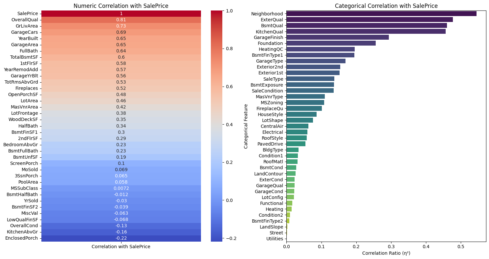
| OverallQual | GrLivArea | ExterQual | Foundation | BsmtQual | KitchenQual | GarageFinish | Neighborhood | SalePrice | |
|---|---|---|---|---|---|---|---|---|---|
| 0 | 7 | 1710 | Gd | PConc | Gd | Gd | RFn | CollgCr | 208500 |
| 1 | 6 | 1262 | TA | CBlock | Gd | TA | RFn | Veenker | 181500 |
| 2 | 7 | 1786 | Gd | PConc | Gd | Gd | RFn | CollgCr | 223500 |
| 3 | 7 | 1717 | TA | BrkTil | TA | Gd | Unf | Crawfor | 140000 |
| 4 | 8 | 2198 | Gd | PConc | Gd | Gd | RFn | NoRidge | 250000 |
| ... | ... | ... | ... | ... | ... | ... | ... | ... | ... |
| 1455 | 6 | 1647 | TA | PConc | Gd | TA | RFn | Gilbert | 175000 |
| 1456 | 6 | 2073 | TA | CBlock | Gd | TA | Unf | NWAmes | 210000 |
| 1457 | 7 | 2340 | Ex | Stone | TA | Gd | RFn | Crawfor | 266500 |
| 1458 | 5 | 1078 | TA | CBlock | TA | Gd | Unf | NAmes | 142125 |
| 1459 | 5 | 1256 | Gd | CBlock | TA | TA | Fin | Edwards | 147500 |
1460 rows × 9 columns
df_feat_extracted = pd.concat([df_clean[feature_selector.selected_features_],df_clean["SalePrice"]],axis=1)
df_feat_extracted.isnull().sum()
| 0 | |
|---|---|
| OverallQual | 0 |
| GrLivArea | 0 |
| ExterQual | 0 |
| Foundation | 0 |
| BsmtQual | 0 |
| KitchenQual | 0 |
| GarageFinish | 0 |
| Neighborhood | 0 |
| SalePrice | 0 |
corr = df_feat_extracted.corr(numeric_only=True)['SalePrice'].sort_values()
# Plot as bar chart
ax = corr.plot(kind='bar', figsize=(12, 8))
# Annotate bars
for container in ax.containers:
ax.bar_label(container, fmt="%.2f", label_type="edge", fontsize=10)
plt.title("Correlation of Numerical Features with SalePrice", fontsize=14)
plt.ylabel("Correlation Coefficient")
plt.xticks(rotation=45, ha='right')
plt.show()
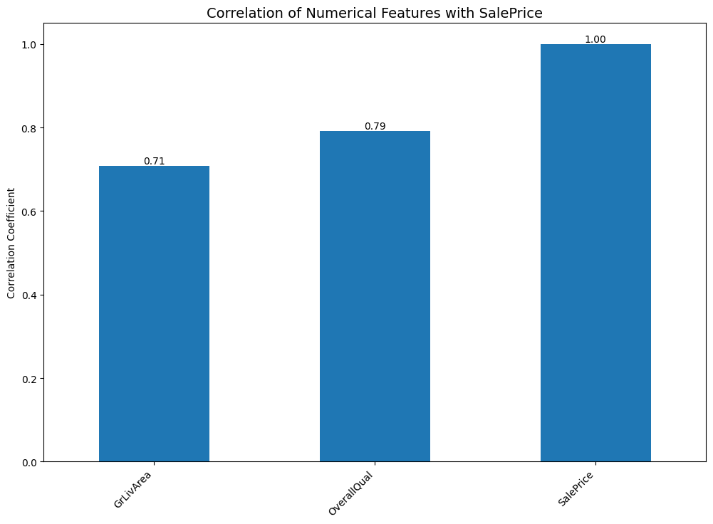
Feature Explanation#
🏘️ Neighborhood#
Type: Categorical
Description: Physical locations within Ames city limits.
Examples:
Blmngtn→ Bloomington HeightsGilbert→ GilbertStoneBr→ Stone Brook
🪟 ExterQual#
Type: Ordinal (categorical with order)
Description: Evaluates the quality of the material on the exterior.
Values:
Ex→ ExcellentGd→ GoodTA→ Typical/AverageFa→ FairPo→ Poor
🏠 BsmtQual#
Type: Ordinal
Description: Evaluates the height of the basement.
Values:
Ex→ Excellent (100+ inches)Gd→ Good (90–99 inches)TA→ Typical (80–89 inches)Fa→ Fair (70–79 inches)Po→ Poor (<70 inches)NA→ No Basement
👩🍳 KitchenQual#
Type: Ordinal
Description: Kitchen quality rating.
Values:
Ex→ ExcellentGd→ GoodTA→ Typical/AverageFa→ FairPo→ Poor
🚗 GarageFinish#
Type: Categorical
Description: Interior finish of the garage.
Values:
Fin→ FinishedRFn→ Rough FinishedUnf→ UnfinishedNA→ No Garage
🧱 Foundation#
Type: Categorical
Description: Type of foundation of the house.
Values:
BrkTil→ Brick & TileCBlock→ Cinder BlockPConc→ Poured ConcreteSlab→ SlabStone→ StoneWood→ Wood
📊 OverallQual#
Type: Ordinal (1–10 scale)
Description: Rates the overall material and finish of the house.
Scale:
10→ Very Excellent9→ Excellent8→ Very Good7→ Good6→ Above Average5→ Average4→ Below Average3→ Fair2→ Poor1→ Very Poor
📏 GrLivArea#
Type: Numerical (continuous)
Description: Above grade (ground) living area square feet.
Example:
1500sq. ft.,2500sq. ft.
💰 SalePrice#
Type: Numerical (continuous, target variable)
Description: Sale price of the house in USD.
Example:
200000,340000
Bivariate Analysis#
plt.figure(figsize=(12, 8))
# sns.scatterplot(x='OverallQual', y='SalePrice', data=df_clean)
plt.subplot(1, 3, 1)
sns.regplot(x='OverallQual', y='SalePrice', data=df_feat_extracted)
plt.subplot(1, 3, 2)
sns.scatterplot(x='OverallQual', y='SalePrice', data=df_feat_extracted)
# plt.show()
plt.subplot(1, 3, 3)
sns.scatterplot(x='GrLivArea', y='SalePrice', data=df_feat_extracted)
plt.show()
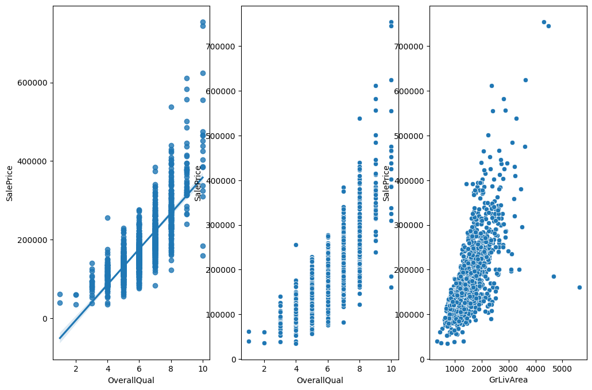
Above plot depicts strong relationshsip between OverQual and SalePrice
import seaborn as sns
import matplotlib.pyplot as plt
categorical_cols = ["Neighborhood","ExterQual","BsmtQual","KitchenQual","GarageFinish","Foundation"]
# Define subplot grid
n_cols = 3
n_rows = (len(categorical_cols) +1) // n_cols
fig, axes = plt.subplots(n_rows+1, n_cols, figsize=(15, 10))
axes = axes.flatten() # Flatten for easy indexing
for i, col in enumerate(categorical_cols):
sns.violinplot(x=col, y="SalePrice", data=df_feat_extracted, ax=axes[i])
axes[i].set_title(f"{col} vs SalePrice")
axes[i].tick_params(axis='x', rotation=45)
# Remove any empty subplots
for j in range(i+1, len(axes)):
fig.delaxes(axes[j])
plt.tight_layout()
plt.show()
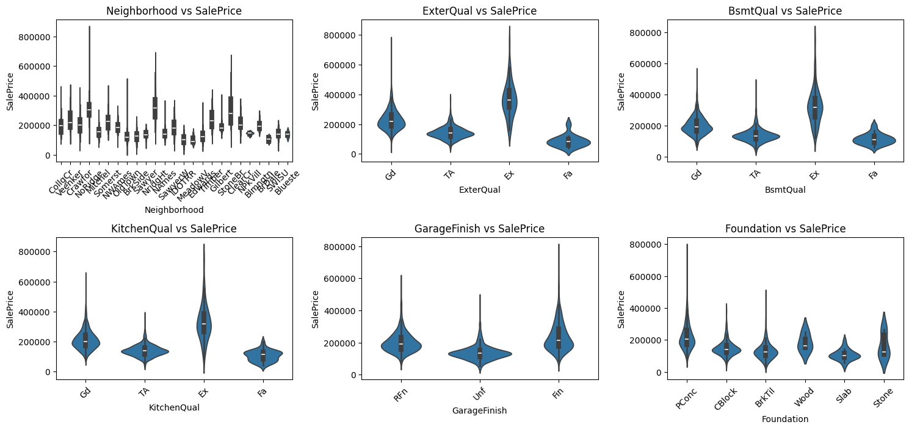
Multivariate Analysis#
sns.lmplot(
data=df_feat_extracted,
x="GrLivArea", y="SalePrice",
hue="OverallQual", scatter_kws={"alpha":0.5}
)
plt.show()
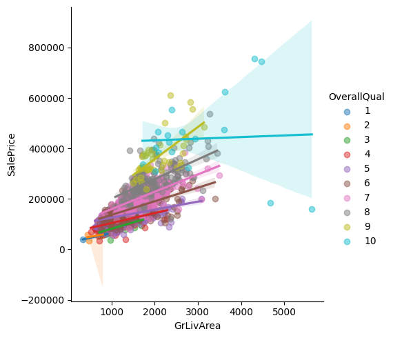
There is a general positive correlation between living area and sales price, meaning larger homes tend to have higher sales prices.
Homes with higher OverallQual ratings (e.g., 8, 9, 10) are mostly clustered at higher sales prices and larger living areas, indicating better quality homes are more expensive.
Lower-rated homes (e.g., 1, 2, 3) are concentrated at lower sales prices and smaller living areas.
A cyan triangular confidence interval suggests a trend line, with most data points falling within or near this area, reinforcing the correlation.
Outliers exist, such as a few homes with large living areas but relatively low sales prices, possibly indicating other influencing factors like location or condition.
g = sns.FacetGrid(df_feat_extracted, col="OverallQual", col_wrap=5, height=3)
g.map(sns.scatterplot, "ExterQual", "SalePrice")
plt.show()
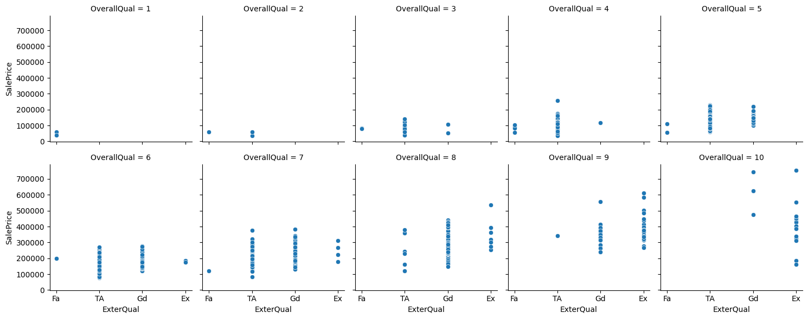
g = sns.FacetGrid(df_feat_extracted, col="OverallQual", col_wrap=5, height=3)
g.map(sns.boxplot, "ExterQual", "SalePrice")
plt.show()
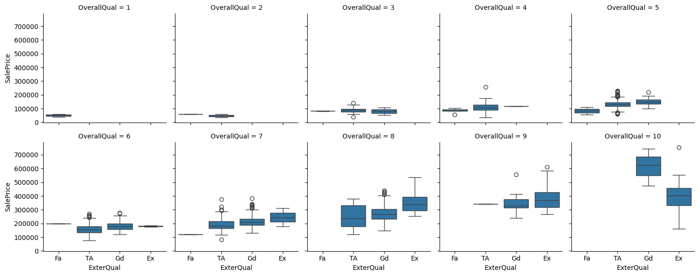
OverallQual Impact: Sales prices generally increase with higher OverallQual ratings. Homes with OverallQual 1-3 have very low median prices (below $100,000) while those with OverallQual \(8-10\) show median prices ranging from $200,000 to over $400,000.
ExterQual Influence: Within each OverallQual category, exterior quality (Fa to Ex) shows a trend where better exterior quality (Gd, Ex) tends to correlate with higher sales prices, though the effect is more pronounced in higher OverallQual groups (e.g., 8-10).
Variability: Lower OverallQual ratings (1-5) show less variability and lower price ranges, while higher ratings (6-10) exhibit greater spread, with some homes reaching up to \(600,000-\)700,000, especially with excellent exterior quality.
Outliers: Notable outliers exist, particularly in OverallQual 5-10, where some homes exceed $500,000, suggesting exceptional cases influenced by factors beyond quality ratings.
This indicates that both overall quality and exterior quality significantly affect sales prices, with stronger effects at higher quality levels.
ExterQual is associated with OverallQual rather than causing it. To decide whether both should be kept in the regression model, we need to check multicollinearity using VIF
df_feat_extracted['Foundation'].value_counts()
| count | |
|---|---|
| Foundation | |
| PConc | 647 |
| CBlock | 634 |
| BrkTil | 146 |
| Slab | 24 |
| Stone | 6 |
| Wood | 3 |
g = sbn.FacetGrid(df_feat_extracted, col="KitchenQual", col_wrap=4, height=4)
g.map(sbn.regplot, "OverallQual", "SalePrice")
plt.show()
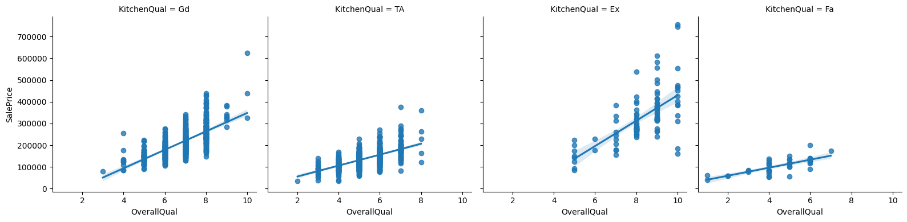
sbn.scatterplot(data=df_feat_extracted, x="OverallQual", y="SalePrice", hue="Foundation")
plt.show()
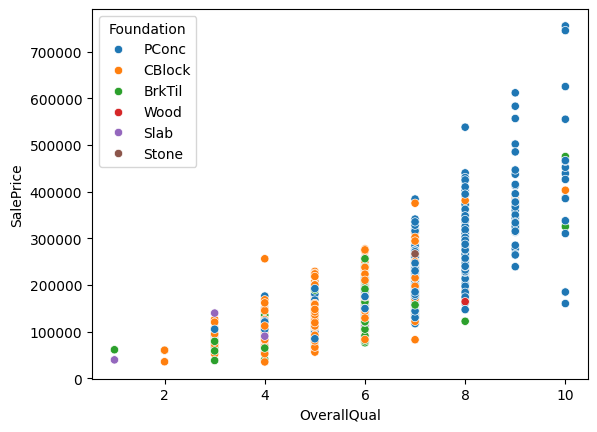
g = sbn.FacetGrid(df_feat_extracted, col="OverallQual", col_wrap=4, height=4)
g.map(sns.regplot, "GrLivArea", "SalePrice", scatter_kws={'s':10}, line_kws={'color':'red'})
plt.show()
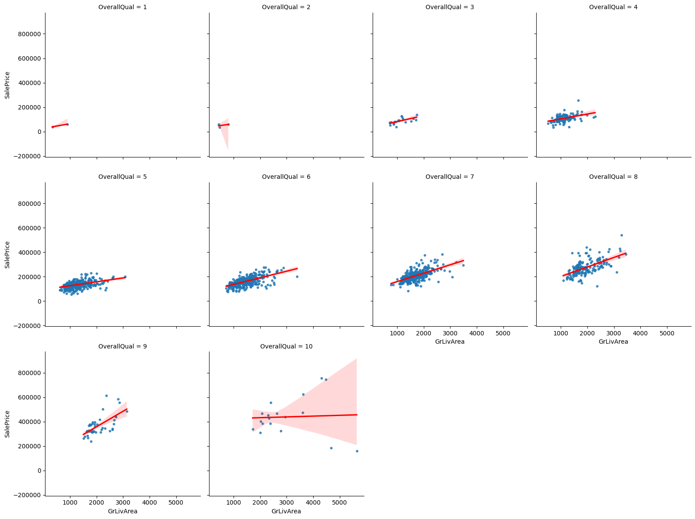
The light red space around the regression line is the confidence interval (CI) of the regression estimate.
By default,
sns.regplotshows a 95% confidence interval.It represents the range in which the true regression line is likely to fall.
Narrow bands → more certainty in the regression estimate.
Wider bands → more variability or fewer data points.
sns.pairplot(df_feat_extracted[['OverallQual', 'GrLivArea', 'SalePrice']])
plt.show()
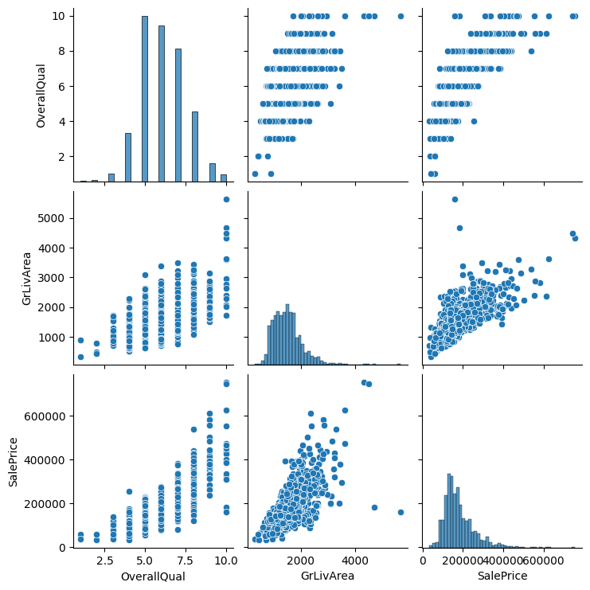
Feature Encoding#
import pandas as pd
from sklearn.preprocessing import OrdinalEncoder, OneHotEncoder
from sklearn.pipeline import Pipeline, make_pipeline
import pandas as pd
import numpy as np
from sklearn.base import BaseEstimator, TransformerMixin
# -----------------------------
# 1) Feature Groups
# -----------------------------
# ordinal_features = ["ExterQual", "BsmtQual", "KitchenQual"]
# categorical_features = ["Neighborhood", "GarageFinish", "Foundation"]
# numerical_features = ["OverallQual", "GrLivArea"]
# ordinal_mappings = {
# "ExterQual": {"Po": 1, "Fa": 2, "TA": 3, "Gd": 4, "Ex": 5},
# "BsmtQual": {"NA": 0, "Po": 1, "Fa": 2, "TA": 3, "Gd": 4, "Ex": 5},
# "KitchenQual": {"Po": 1, "Fa": 2, "TA": 3, "Gd": 4, "Ex": 5},
# }
# -----------------------------
# 5) Decode Helper (works with both Pipeline and make_pipeline)
# -----------------------------
def decode(pipeline, encoder_step, feature, encoded_value):
"""
Recover original category from encoded integer.
Works with both Pipeline and make_pipeline.
For make_pipeline, step names are auto-generated like:
- 'ordinalmapper' (lowercase, no underscores)
- 'categoricallabelencoder'
"""
# Handle both named steps (Pipeline) and auto-generated names (make_pipeline)
if hasattr(pipeline, "named_steps"):
# For Pipeline with named steps
if encoder_step in pipeline.named_steps:
encoders = pipeline.named_steps[encoder_step].encoders
else:
# For make_pipeline, try auto-generated names
step_names = list(pipeline.named_steps.keys())
print(f"Available steps: {step_names}")
raise ValueError(
f"Step '{encoder_step}' not found. Available steps: {step_names}"
)
else:
# For very old sklearn versions or custom pipelines
encoders = pipeline.steps[encoder_step][1].encoders
if feature not in encoders:
raise ValueError(f"Feature '{feature}' not found in encoders.")
le = encoders[feature]
if encoded_value < 0 or encoded_value >= len(le.classes_):
raise ValueError(f"Encoded value {encoded_value} out-of-range for '{feature}'.")
return le.inverse_transform([encoded_value])[0]
def decode_make_pipeline(pipeline, feature, encoded_value):
"""
Simplified decode function specifically for make_pipeline.
Automatically finds the CategoricalLabelEncoder step.
"""
# Find the CategoricalLabelEncoder step
encoder_step = None
for step_name, step_obj in pipeline.named_steps.items():
if isinstance(step_obj, CategoricalLabelEncoder):
encoder_step = step_obj
break
if encoder_step is None:
raise ValueError("CategoricalLabelEncoder not found in pipeline")
if feature not in encoder_step.encoders:
raise ValueError(f"Feature '{feature}' not found in encoders.")
le = encoder_step.encoders[feature]
if encoded_value < 0 or encoded_value >= len(le.classes_):
raise ValueError(f"Encoded value {encoded_value} out-of-range for '{feature}'.")
return le.inverse_transform([encoded_value])[0]
class OrdinalEncoderDF(BaseEstimator, TransformerMixin):
def __init__(self, cols, categories):
self.cols = cols
self.categories = categories
self.encoder = OrdinalEncoder(categories=self.categories)
def fit(self, X, y=None):
self.encoder.fit(X[self.cols])
return self
def transform(self, X):
X_new = X.copy()
print(self.encoder.transform(X[self.cols]))
X_new[self.cols] = self.encoder.transform(X[self.cols])
X_new[self.cols] = X_new[self.cols].astype(int)
return X_new
class FrequencyEncoderDF(BaseEstimator, TransformerMixin):
def __init__(self, cols=None):
self.cols = cols
self.freq_maps_ = {}
def fit(self, X, y=None):
self.cols_ = self.cols or X.select_dtypes(include="object").columns.tolist()
for col in self.cols_:
self.freq_maps_[col] = X[col].value_counts(normalize=True)
return self
def transform(self, X):
X_new = X.copy()
for col in self.cols_:
X_new[col + "_freq"] = X_new[col].map(self.freq_maps_[col]).fillna(0)
return X_new
# -------------------------
# 2. OneHot Encoder Wrapper
# -------------------------
class OneHotEncoderDF(BaseEstimator, TransformerMixin):
def __init__(self, cols):
self.cols = cols
self.encoder = OneHotEncoder(drop="first",handle_unknown="ignore", sparse_output=False)
self.feature_names_ = []
def fit(self, X, y=None):
self.encoder.fit(X[self.cols])
self.feature_names_ = self.encoder.get_feature_names_out(self.cols)
return self
def transform(self, X):
X_new = X.copy()
# Transform and get dense array
data = self.encoder.transform(X_new[self.cols])
# Debug information
print(f"++++++++++++++++++++++++++++++++ {self.__class__.__name__} =================================")
print(f"Transformed data shape: {data.shape}")
print(f"Feature names: {self.feature_names_}")
print(f"Number of feature names: {len(self.feature_names_)}")
# Create DataFrame with encoded features
encoded = pd.DataFrame(
data,
columns=self.feature_names_,
index=X_new.index,
)
# Remove original columns and add encoded ones
X_new = X_new.drop(columns=self.cols)
X_new = pd.concat([X_new, encoded.apply(round).astype("int")], axis=1)
return X_new
# -------------------------
# 3. Target Encoder Wrapper
# -------------------------
class DataFrameTargetEncoder(BaseEstimator, TransformerMixin):
"""
Target Encoder for regression. Compatible with sklearn pipelines.
Accepts X (DataFrame) and y (Series) in fit, returns DataFrame in transform.
"""
def __init__(self, cols=None, target=None, smoothing=10):
self.cols = cols
self.smoothing = smoothing
self.target = target
self.mapping_ = {}
self.global_mean_ = None
def fit(self, X):
self.cols_ = self.cols or X.select_dtypes(include="object").columns.tolist()
if not isinstance(X, pd.DataFrame):
raise ValueError("X must be a pandas DataFrame.")
if self.target is None:
raise ValueError("y must be provided.")
# if self.use_mapping:
if self.target in X.columns:
y = X[self.target]
else:
return self
self.global_mean_ = y.mean()
for col in self.cols_:
stats = X.groupby(col).size().to_frame("count")
means = X.groupby(col).apply(lambda df: y[df.index].mean())
stats["mean"] = means
smoothing = 1 / (1 + np.exp(-(stats["count"] - 1) / self.smoothing))
self.mapping_[col] = (
self.global_mean_ * (1 - smoothing) + stats["mean"] * smoothing
).apply(round)
return self
def transform(self, X):
if not isinstance(X, pd.DataFrame):
raise ValueError("X must be a pandas DataFrame.")
X_new = X.copy()
for col in self.cols_:
X_new[col] = (
X_new[col].map(self.mapping_[col]).fillna(self.global_mean_)
)
return X_new
def create_encoder_pipeline(
ordinal_categories,
ordinal_features,
low_cardinal_nominal_features,
high_cardinal_nominal_features,
target,
):
pipe = Pipeline(
[
("ordinal", OrdinalEncoderDF(ordinal_features, ordinal_categories)),
("low_card_ohe", OneHotEncoderDF(low_cardinal_nominal_features)),
(
"high_card_target",
DataFrameTargetEncoder(high_cardinal_nominal_features, target=target),
),
]
)
return pipe
ordinal_features = ["ExterQual", "BsmtQual", "KitchenQual","GarageFinish"]
ordinal_categories = [
["Po", "Fa", "TA", "Gd", "Ex"], # ExterQual
["NA", "Po", "Fa", "TA", "Gd", "Ex"], # BsmtQual
["Po", "Fa", "TA", "Gd", "Ex"], # KitchenQual
[ "NA", "Unf", "RFn", "Fin"] # GarageFinish
]
high_cardinal_nominal_features = [ 'Neighborhood']
low_cardinal_nominal_features = ["Foundation"]
encoder = create_encoder_pipeline(ordinal_categories,ordinal_features,low_cardinal_nominal_features,high_cardinal_nominal_features,target="SalePrice")
df_encoded = encoder.fit_transform(df_feat_extracted)
[[3. 4. 3. 2.]
[2. 4. 2. 2.]
[3. 4. 3. 2.]
...
[4. 3. 3. 2.]
[2. 3. 3. 1.]
[3. 3. 2. 3.]]
++++++++++++++++++++++++++++++++ OneHotEncoderDF =================================
Transformed data shape: (1460, 5)
Feature names: ['Foundation_CBlock' 'Foundation_PConc' 'Foundation_Slab'
'Foundation_Stone' 'Foundation_Wood']
Number of feature names: 5
Mulicollinearity Analysis of Features#
from statsmodels.stats.outliers_influence import variance_inflation_factor
from statsmodels.tools.tools import add_constant
X = add_constant(df_encoded.drop("SalePrice",axis=1)) # add intercept
vif_data = pd.DataFrame()
vif_data["feature"] = X.columns
vif_data["VIF"] = [variance_inflation_factor(X.values, i)
for i in range(X.shape[1])]
print(vif_data)
feature VIF
0 const 54.421180
1 OverallQual 3.484456
2 GrLivArea 1.601053
3 ExterQual 3.058599
4 BsmtQual 2.562222
5 KitchenQual 2.353068
6 GarageFinish 1.659040
7 Neighborhood 2.404017
8 Foundation_CBlock 3.201938
9 Foundation_PConc 4.515458
10 Foundation_Slab 1.179593
11 Foundation_Stone 1.054125
12 Foundation_Wood 1.031157
Based on the results, there is no evidence of multicollinearity among the features
VIF Value |
Interpretation |
Action |
|---|---|---|
1 |
No correlation |
✅ Safe |
1 – 3 |
Low correlation |
✅ Acceptable |
3 – 5 |
Moderate correlation |
⚠️ Watch closely |
> 5 |
High multicollinearity |
❌ Consider fixing |
> 10 |
Severe multicollinearity |
❌ Definitely remove/adjust |
Feature Selection#
Based on the above results , we need to keep all the above :features as final predictors
Feature Transformation#
import pandas as pd
import numpy as np
import matplotlib.pyplot as plt
import seaborn as sns
from sklearn.base import BaseEstimator, TransformerMixin
from sklearn.preprocessing import PowerTransformer
class FeatureTransformer(BaseEstimator, TransformerMixin):
"""
Continuous Feature Transformer for regression or general numeric datasets.
Automatically detects continuous numerical features (by minimum unique values),
calculates skewness, and applies appropriate transformations to reduce skew:
- log1p: for high positive skew and strictly positive values
- Box-Cox: for moderate positive skew and strictly positive values
- Yeo-Johnson: for negative skew or features containing zeros/negative values
- None: for features with low skewness
Can visualize the original vs transformed distributions using seaborn.
Parameters
----------
skew_threshold : float, default=0.5
Minimum absolute skewness required to apply any transformation.
# log_skew_threshold : float, default=1.0
# Skew above this threshold uses log1p transformation (if all values > 0).
min_unique : int, default=30
Minimum distinct values to consider a feature continuous.
visualize : bool, default=True
If True, will visualize original vs transformed distributions after fit_transform.
Attributes
----------
continuous_features_ : list
List of features identified as continuous based on min_unique.
transformers_ : dict
Mapping of feature name -> (transformation method, fitted transformer object)
"""
def __init__(self, skew_threshold=0.5, min_unique=30, visualize=True):
self.skew_threshold = skew_threshold
self.min_unique = min_unique
self.visualize = visualize
self.continuous_features_ = []
self.transformers_ = {}
def fit(self, X, y=None):
numeric_features = X.select_dtypes(include=np.number).columns.tolist()
self.continuous_features_ = [
col
for col in numeric_features
if X[col].nunique() > self.min_unique and not col.endswith("_encoded")
]
for col in self.continuous_features_:
skewness = X[col].skew()
col_min = X[col].min()
if abs(skewness) > self.skew_threshold:
if skewness > 0.5 and col_min > 0:
self.transformers_[col] = ("log1p", None)
elif 0 < skewness <= 0.5 and col_min > 0:
pt = PowerTransformer(method="box-cox").fit(X[[col]])
self.transformers_[col] = ("box-cox", pt)
else:
pt = PowerTransformer(method="yeo-johnson").fit(X[[col]])
self.transformers_[col] = ("yeo-johnson", pt)
else:
self.transformers_[col] = ("none", None)
return self
def transform(self, X, y=None):
X_new = X.copy()
for col, (method, transformer) in self.transformers_.items():
if method == "log1p":
X_new[col] = np.log1p(X_new[col])
elif method in ["box-cox", "yeo-johnson"]:
X_new[col] = transformer.transform(X_new[[col]])
if self.visualize:
self.visualize_distributions(X, X_new)
return X_new
def inverse_transform(self, X):
X_orig = X.copy()
for col, (method, transformer) in self.transformers_.items():
if method == "log1p":
X_orig[col] = np.expm1(X_orig[col])
elif method in ["box-cox", "yeo-johnson"]:
X_orig[col] = transformer.inverse_transform(X_orig[[col]])
return X_orig
def visualize_distributions(self, X, X_transformed):
"""Visualize all continuous features before and after transformation using seaborn."""
n_features = len(self.continuous_features_)
if n_features == 0:
print("No continuous features detected for visualization.")
return
n_cols = 2 # before and after
n_rows = n_features
fig, axes = plt.subplots(n_rows, n_cols, figsize=(12, 4 * n_rows))
if n_rows == 1:
axes = np.expand_dims(axes, axis=0) # make it 2D for consistency
for i, col in enumerate(self.continuous_features_):
sns.histplot(X[col], bins=30, kde=True, color="skyblue", ax=axes[i, 0])
axes[i, 0].set_title(f"Original: {col}\nSkew={X[col].skew():.2f}")
sns.histplot(
X_transformed[col], bins=30, kde=True, color="lightgreen", ax=axes[i, 1]
)
axes[i, 1].set_title(
f"Transformed: {col}\nSkew={X_transformed[col].skew():.2f}"
)
plt.tight_layout()
plt.show()
feature_transformer = FeatureTransformer()
df_transformed = feature_transformer.fit_transform(df_encoded)
df_transformed
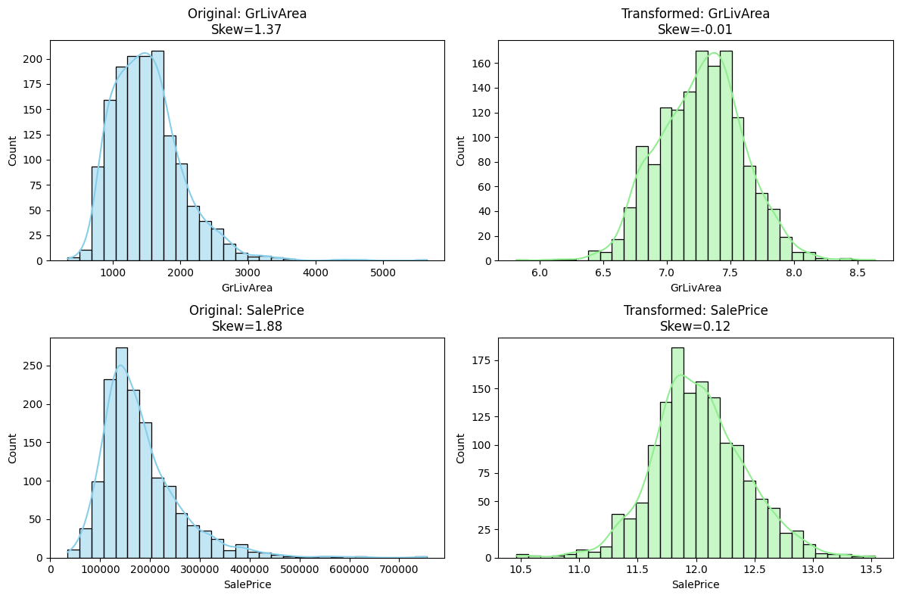
| OverallQual | GrLivArea | ExterQual | BsmtQual | KitchenQual | GarageFinish | Neighborhood | SalePrice | Foundation_CBlock | Foundation_PConc | Foundation_Slab | Foundation_Stone | Foundation_Wood | |
|---|---|---|---|---|---|---|---|---|---|---|---|---|---|
| 0 | 7 | 7.444833 | 3 | 4 | 3 | 2 | 197966 | 12.247699 | 0 | 1 | 0 | 0 | 0 |
| 1 | 6 | 7.141245 | 2 | 4 | 2 | 2 | 223214 | 12.109016 | 1 | 0 | 0 | 0 | 0 |
| 2 | 7 | 7.488294 | 3 | 4 | 3 | 2 | 197966 | 12.317171 | 0 | 1 | 0 | 0 | 0 |
| 3 | 7 | 7.448916 | 2 | 3 | 3 | 1 | 210426 | 11.849405 | 0 | 0 | 0 | 0 | 0 |
| 4 | 8 | 7.695758 | 3 | 4 | 3 | 2 | 332519 | 12.429220 | 0 | 1 | 0 | 0 | 0 |
| ... | ... | ... | ... | ... | ... | ... | ... | ... | ... | ... | ... | ... | ... |
| 1455 | 6 | 7.407318 | 2 | 4 | 2 | 2 | 192850 | 12.072547 | 0 | 1 | 0 | 0 | 0 |
| 1456 | 6 | 7.637234 | 2 | 4 | 2 | 1 | 189044 | 12.254868 | 1 | 0 | 0 | 0 | 0 |
| 1457 | 7 | 7.758333 | 4 | 3 | 3 | 2 | 210426 | 12.493133 | 0 | 0 | 0 | 1 | 0 |
| 1458 | 5 | 6.983790 | 2 | 3 | 3 | 1 | 145847 | 11.864469 | 1 | 0 | 0 | 0 | 0 |
| 1459 | 5 | 7.136483 | 3 | 3 | 2 | 3 | 128222 | 11.901590 | 1 | 0 | 0 | 0 | 0 |
1460 rows × 13 columns
Target#
Feature Scaling#
sbn.histplot(df_transformed[target],kde=True)
plt.show()
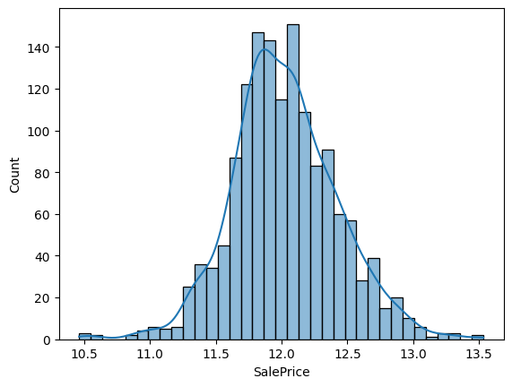
However the fact the SalePrice is not scaled, Standardizing it is not necessary
import pandas as pd
import numpy as np
import matplotlib.pyplot as plt
import seaborn as sns
from sklearn.base import BaseEstimator, TransformerMixin
from sklearn.preprocessing import StandardScaler, MinMaxScaler, RobustScaler
class FeatureScaler(BaseEstimator, TransformerMixin):
"""
Scale continuous numeric features in a DataFrame using different scaling strategies.
This transformer automatically detects continuous numeric columns
and applies the chosen scaling method. It supports inverse_transform
for integration in pipelines. It can also visualize before/after scaling.
Parameters
----------
method : str, default="auto"
Scaling strategy to apply:
- "auto": automatically chooses scaler based on skew/outliers.
- "standard": use StandardScaler (mean=0, std=1).
- "minmax": use MinMaxScaler (scale to [0,1]).
- "robust": use RobustScaler (median=0, IQR=1, robust to outliers).
skew_threshold : float, default=0.5
Absolute skew above which 'auto' mode may use RobustScaler.
min_unique : int, default=30
Minimum number of unique values for a column to be considered continuous.
visualize_flag : bool, default=True
Whether to plot boxplots before and after scaling in fit_transform.
Attributes
----------
continuous_features_ : list
List of continuous numeric columns detected in the DataFrame.
scalers_ : dict
Dictionary mapping each continuous column to its fitted scaler.
Notes on when to use each scaler
--------------------------------
- StandardScaler: Use when features are roughly Gaussian and free of extreme outliers.
- MinMaxScaler: Use when you want all features in the [0,1] range, e.g., for neural networks.
- RobustScaler: Use when features contain outliers or are highly skewed.
- Auto mode: Automatically applies RobustScaler for skewed or repeated-value features,
otherwise StandardScaler.
"""
def __init__(
self,
method="auto",
target=None,
skew_threshold=0.5,
min_unique=30,
visualize=True,
):
self.target = target
self.method = method
self.skew_threshold = skew_threshold
self.min_unique = min_unique
self.visualize = visualize
self.continuous_features_ = []
self.scalers_ = {}
def fit(self, X, y=None):
if not isinstance(X, pd.DataFrame):
raise ValueError("Input must be a pandas DataFrame.")
numeric_features = X.select_dtypes(include=np.number).columns.tolist()
self.continuous_features_ = [
col for col in numeric_features if X[col].nunique() > self.min_unique
]
if self.target and self.target in self.continuous_features_:
self.continuous_features_.remove(self.target)
for col in self.continuous_features_:
skewness = X[col].skew()
if self.method == "standard":
scaler = StandardScaler().fit(X[[col]])
elif self.method == "minmax":
scaler = MinMaxScaler().fit(X[[col]])
elif self.method == "robust":
scaler = RobustScaler().fit(X[[col]])
else: # auto
if (
abs(skewness) > self.skew_threshold
or X[col].nunique() / X.shape[0] < 0.05
):
scaler = RobustScaler().fit(X[[col]])
else:
scaler = StandardScaler().fit(X[[col]])
self.scalers_[col] = scaler
return self
def transform(self, X):
X_new = X.copy()
for col, scaler in self.scalers_.items():
X_new[col] = scaler.transform(X_new[[col]])
if self.visualize:
self.visualize_distribution(X, X_new)
return X_new
def inverse_transform(self, X):
X_orig = X.copy()
for col, scaler in self.scalers_.items():
X_orig[col] = scaler.inverse_transform(X_orig[[col]])
return X_orig
def visualize_distribution(self, X, X_scaled=None):
"""Visualize boxplots before and after scaling for continuous features."""
if len(self.continuous_features_) == 0:
print("No continuous features detected.")
return
X_scaled = X_scaled if X_scaled is not None else self.transform(X)
n_features = len(self.continuous_features_)
fig, axes = plt.subplots(n_features, 2, figsize=(12, 4 * n_features))
if n_features == 1:
axes = np.expand_dims(axes, axis=0) # Make 2D array for consistent indexing
for i, col in enumerate(self.continuous_features_):
sns.boxplot(x=X[col], ax=axes[i, 0], color="skyblue")
axes[i, 0].set_title(f"Original: {col}")
sns.boxplot(x=X_scaled[col], ax=axes[i, 1], color="lightgreen")
axes[i, 1].set_title(f"Scaled: {col}")
plt.tight_layout()
plt.show()
feature_scaler = FeatureScaler(target="SalePrice")
df_scaled = feature_scaler.fit_transform(df_transformed)
df_scaled
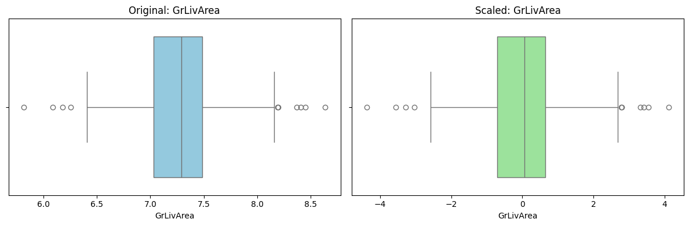
| OverallQual | GrLivArea | ExterQual | BsmtQual | KitchenQual | GarageFinish | Neighborhood | SalePrice | Foundation_CBlock | Foundation_PConc | Foundation_Slab | Foundation_Stone | Foundation_Wood | |
|---|---|---|---|---|---|---|---|---|---|---|---|---|---|
| 0 | 7 | 0.529194 | 3 | 4 | 3 | 2 | 197966 | 12.247699 | 0 | 1 | 0 | 0 | 0 |
| 1 | 6 | -0.381965 | 2 | 4 | 2 | 2 | 223214 | 12.109016 | 1 | 0 | 0 | 0 | 0 |
| 2 | 7 | 0.659631 | 3 | 4 | 3 | 2 | 197966 | 12.317171 | 0 | 1 | 0 | 0 | 0 |
| 3 | 7 | 0.541448 | 2 | 3 | 3 | 1 | 210426 | 11.849405 | 0 | 0 | 0 | 0 | 0 |
| 4 | 8 | 1.282295 | 3 | 4 | 3 | 2 | 332519 | 12.429220 | 0 | 1 | 0 | 0 | 0 |
| ... | ... | ... | ... | ... | ... | ... | ... | ... | ... | ... | ... | ... | ... |
| 1455 | 6 | 0.416598 | 2 | 4 | 2 | 2 | 192850 | 12.072547 | 0 | 1 | 0 | 0 | 0 |
| 1456 | 6 | 1.106648 | 2 | 4 | 2 | 1 | 189044 | 12.254868 | 1 | 0 | 0 | 0 | 0 |
| 1457 | 7 | 1.470102 | 4 | 3 | 3 | 2 | 210426 | 12.493133 | 0 | 0 | 0 | 1 | 0 |
| 1458 | 5 | -0.854536 | 2 | 3 | 3 | 1 | 145847 | 11.864469 | 1 | 0 | 0 | 0 | 0 |
| 1459 | 5 | -0.396257 | 3 | 3 | 2 | 3 | 128222 | 11.901590 | 1 | 0 | 0 | 0 | 0 |
1460 rows × 13 columns
Processor Pipeline for Trained Data#
ordinal_features = ["ExterQual", "BsmtQual", "KitchenQual","GarageFinish"]
ordinal_categories = [
["Po", "Fa", "TA", "Gd", "Ex"], # ExterQual
["NA", "Po", "Fa", "TA", "Gd", "Ex"], # BsmtQual
["Po", "Fa", "TA", "Gd", "Ex"], # KitchenQual
[ "NA", "Unf", "RFn", "Fin"] # GarageFinish
]
high_cardinal_nominal_features = [ 'Neighborhood']
low_cardinal_nominal_features = ["Foundation"]
encoder = create_encoder_pipeline(ordinal_categories,ordinal_features,low_cardinal_nominal_features,high_cardinal_nominal_features,target="SalePrice")
target = "SalePrice"
def create_full_pipeline(target):
full_pipeline = Pipeline([
("preprocessor",Preprocessor(cardinality_threshold=10, skew_threshold=0.5)),
("selector",FeatureSelector(target=target,visualize=False)),
("encoder",encoder),
("transformer", FeatureTransformer(visualize=False)),
("scaler", FeatureScaler(target=target))
])
return full_pipeline
train_pipeline = create_full_pipeline(target)
train_pipeline.fit(train_df)
df_train = train_pipeline.transform(train_df)
df_train
🔄 Fitting DataPreprocessor on data with shape: (1460, 81)
Step 1: Analyzing missing values...
SUMMMARY
ColumnName MissingValues MissingPercentage Dtype \
PoolQC PoolQC 1453 99.52 object
MiscFeature MiscFeature 1406 96.30 object
Alley Alley 1369 93.77 object
Fence Fence 1179 80.75 object
MasVnrType MasVnrType 872 59.73 object
FireplaceQu FireplaceQu 690 47.26 object
LotFrontage LotFrontage 259 17.74 float64
GarageType GarageType 81 5.55 object
GarageYrBlt GarageYrBlt 81 5.55 float64
GarageFinish GarageFinish 81 5.55 object
GarageQual GarageQual 81 5.55 object
GarageCond GarageCond 81 5.55 object
BsmtExposure BsmtExposure 38 2.60 object
BsmtFinType2 BsmtFinType2 38 2.60 object
BsmtQual BsmtQual 37 2.53 object
BsmtCond BsmtCond 37 2.53 object
BsmtFinType1 BsmtFinType1 37 2.53 object
MasVnrArea MasVnrArea 8 0.55 float64
Electrical Electrical 1 0.07 object
UniqueValues Strategy
PoolQC 3 Drop Column
MiscFeature 4 Drop Column
Alley 2 Drop Column
Fence 4 Drop Column
MasVnrType 3 Impute
FireplaceQu 5 Impute
LotFrontage 110 Impute
GarageType 6 Impute
GarageYrBlt 97 Impute
GarageFinish 3 Impute
GarageQual 5 Impute
GarageCond 5 Impute
BsmtExposure 4 Impute
BsmtFinType2 6 Impute
BsmtQual 4 Impute
BsmtCond 4 Impute
BsmtFinType1 6 Impute
MasVnrArea 327 Impute
Electrical 5 Impute
Found 19 columns with missing values.
Columns to drop (>80% missing): 4
Step 2: Determining numeric imputation strategies...
Step 3: Building preprocessing pipeline...
Dropped 4 sparse columns
Numeric columns: 38
Low cardinality categorical: 36
High cardinality categorical: 3
Step 4: Fitting pipeline...
✅ DataPreprocessor fitted successfully!
✅ Successfully transformed to DataFrame: (1460, 77)
[[3. 4. 3. 2.]
[2. 4. 2. 2.]
[3. 4. 3. 2.]
...
[4. 3. 3. 2.]
[2. 3. 3. 1.]
[3. 3. 2. 3.]]
++++++++++++++++++++++++++++++++ OneHotEncoderDF =================================
Transformed data shape: (1460, 5)
Feature names: ['Foundation_CBlock' 'Foundation_PConc' 'Foundation_Slab'
'Foundation_Stone' 'Foundation_Wood']
Number of feature names: 5
✅ Successfully transformed to DataFrame: (1460, 77)
[[3. 4. 3. 2.]
[2. 4. 2. 2.]
[3. 4. 3. 2.]
...
[4. 3. 3. 2.]
[2. 3. 3. 1.]
[3. 3. 2. 3.]]
++++++++++++++++++++++++++++++++ OneHotEncoderDF =================================
Transformed data shape: (1460, 5)
Feature names: ['Foundation_CBlock' 'Foundation_PConc' 'Foundation_Slab'
'Foundation_Stone' 'Foundation_Wood']
Number of feature names: 5
| OverallQual | GrLivArea | ExterQual | BsmtQual | KitchenQual | GarageFinish | Neighborhood | SalePrice | Foundation_CBlock | Foundation_PConc | Foundation_Slab | Foundation_Stone | Foundation_Wood | |
|---|---|---|---|---|---|---|---|---|---|---|---|---|---|
| 0 | 7 | 0.529194 | 3 | 4 | 3 | 2 | 197966 | 12.247699 | 0 | 1 | 0 | 0 | 0 |
| 1 | 6 | -0.381965 | 2 | 4 | 2 | 2 | 223214 | 12.109016 | 1 | 0 | 0 | 0 | 0 |
| 2 | 7 | 0.659631 | 3 | 4 | 3 | 2 | 197966 | 12.317171 | 0 | 1 | 0 | 0 | 0 |
| 3 | 7 | 0.541448 | 2 | 3 | 3 | 1 | 210426 | 11.849405 | 0 | 0 | 0 | 0 | 0 |
| 4 | 8 | 1.282295 | 3 | 4 | 3 | 2 | 332519 | 12.429220 | 0 | 1 | 0 | 0 | 0 |
| ... | ... | ... | ... | ... | ... | ... | ... | ... | ... | ... | ... | ... | ... |
| 1455 | 6 | 0.416598 | 2 | 4 | 2 | 2 | 192850 | 12.072547 | 0 | 1 | 0 | 0 | 0 |
| 1456 | 6 | 1.106648 | 2 | 4 | 2 | 1 | 189044 | 12.254868 | 1 | 0 | 0 | 0 | 0 |
| 1457 | 7 | 1.470102 | 4 | 3 | 3 | 2 | 210426 | 12.493133 | 0 | 0 | 0 | 1 | 0 |
| 1458 | 5 | -0.854536 | 2 | 3 | 3 | 1 | 145847 | 11.864469 | 1 | 0 | 0 | 0 | 0 |
| 1459 | 5 | -0.396257 | 3 | 3 | 2 | 3 | 128222 | 11.901590 | 1 | 0 | 0 | 0 | 0 |
1460 rows × 13 columns
train_pipeline.named_steps['encoder'].named_steps["high_card_target"].mapping_
{'Neighborhood': Neighborhood
Blmngtn 192528
Blueste 158126
BrDale 118436
BrkSide 125021
ClearCr 210573
CollgCr 197966
Crawfor 210426
Edwards 128222
Gilbert 192850
IDOTRR 102273
MeadowV 112409
Mitchel 156471
NAmes 145847
NPkVill 154546
NWAmes 189044
NoRidge 332519
NridgHt 316203
OldTown 128226
SWISU 145779
Sawyer 136823
SawyerW 186539
Somerst 225371
StoneBr 299722
Timber 240768
Veenker 223214
dtype: int64}
Full Pipeline for Test Data#
class SelectColumns(BaseEstimator, TransformerMixin):
def __init__(self, columns=None):
self.columns = columns or []
def fit(self, X, y=None):
return self # nothing to learn
def transform(self, X):
return X[self.columns]
selected_features = train_pipeline.named_steps['selector'].selected_features_
selected_features
['OverallQual',
'GrLivArea',
'ExterQual',
'Foundation',
'BsmtQual',
'KitchenQual',
'GarageFinish',
'Neighborhood']
test_pipeline = Pipeline([
("preprocessor",Preprocessor(cardinality_threshold=10, skew_threshold=0.5)),
("drop_columns", SelectColumns(columns=selected_features)),
("encoder",encoder),
("transformer", FeatureTransformer()),
("scaler", FeatureScaler(target="SalePrice"))
])
Test Data Processing#
df_test = test_pipeline.fit_transform(test_df)
🔄 Fitting DataPreprocessor on data with shape: (1459, 80)
Step 1: Analyzing missing values...
SUMMMARY
ColumnName MissingValues MissingPercentage Dtype \
PoolQC PoolQC 1456 99.79 object
MiscFeature MiscFeature 1408 96.50 object
Alley Alley 1352 92.67 object
Fence Fence 1169 80.12 object
MasVnrType MasVnrType 894 61.27 object
FireplaceQu FireplaceQu 730 50.03 object
LotFrontage LotFrontage 227 15.56 float64
GarageQual GarageQual 78 5.35 object
GarageCond GarageCond 78 5.35 object
GarageYrBlt GarageYrBlt 78 5.35 float64
GarageFinish GarageFinish 78 5.35 object
GarageType GarageType 76 5.21 object
BsmtCond BsmtCond 45 3.08 object
BsmtQual BsmtQual 44 3.02 object
BsmtExposure BsmtExposure 44 3.02 object
BsmtFinType1 BsmtFinType1 42 2.88 object
BsmtFinType2 BsmtFinType2 42 2.88 object
MasVnrArea MasVnrArea 15 1.03 float64
MSZoning MSZoning 4 0.27 object
Functional Functional 2 0.14 object
BsmtFullBath BsmtFullBath 2 0.14 float64
Utilities Utilities 2 0.14 object
BsmtHalfBath BsmtHalfBath 2 0.14 float64
Exterior1st Exterior1st 1 0.07 object
Exterior2nd Exterior2nd 1 0.07 object
TotalBsmtSF TotalBsmtSF 1 0.07 float64
BsmtUnfSF BsmtUnfSF 1 0.07 float64
BsmtFinSF2 BsmtFinSF2 1 0.07 float64
BsmtFinSF1 BsmtFinSF1 1 0.07 float64
KitchenQual KitchenQual 1 0.07 object
GarageArea GarageArea 1 0.07 float64
GarageCars GarageCars 1 0.07 float64
SaleType SaleType 1 0.07 object
UniqueValues Strategy
PoolQC 2 Drop Column
MiscFeature 3 Drop Column
Alley 2 Drop Column
Fence 4 Drop Column
MasVnrType 3 Impute
FireplaceQu 5 Impute
LotFrontage 115 Impute
GarageQual 4 Impute
GarageCond 5 Impute
GarageYrBlt 97 Impute
GarageFinish 3 Impute
GarageType 6 Impute
BsmtCond 4 Impute
BsmtQual 4 Impute
BsmtExposure 4 Impute
BsmtFinType1 6 Impute
BsmtFinType2 6 Impute
MasVnrArea 303 Impute
MSZoning 5 Impute
Functional 7 Impute
BsmtFullBath 4 Impute
Utilities 1 Impute
BsmtHalfBath 3 Impute
Exterior1st 13 Impute
Exterior2nd 15 Impute
TotalBsmtSF 736 Impute
BsmtUnfSF 793 Impute
BsmtFinSF2 161 Impute
BsmtFinSF1 669 Impute
KitchenQual 4 Impute
GarageArea 459 Impute
GarageCars 6 Impute
SaleType 9 Impute
Found 33 columns with missing values.
Columns to drop (>80% missing): 8
Step 2: Determining numeric imputation strategies...
Step 3: Building preprocessing pipeline...
Dropped 8 sparse columns
Numeric columns: 37
Low cardinality categorical: 36
High cardinality categorical: 3
Step 4: Fitting pipeline...
✅ DataPreprocessor fitted successfully!
✅ Successfully transformed to DataFrame: (1459, 76)
[[2. 3. 2. 1.]
[2. 3. 3. 1.]
[2. 4. 2. 3.]
...
[2. 3. 2. 1.]
[2. 4. 2. 1.]
[2. 4. 2. 3.]]
++++++++++++++++++++++++++++++++ OneHotEncoderDF =================================
Transformed data shape: (1459, 5)
Feature names: ['Foundation_CBlock' 'Foundation_PConc' 'Foundation_Slab'
'Foundation_Stone' 'Foundation_Wood']
Number of feature names: 5
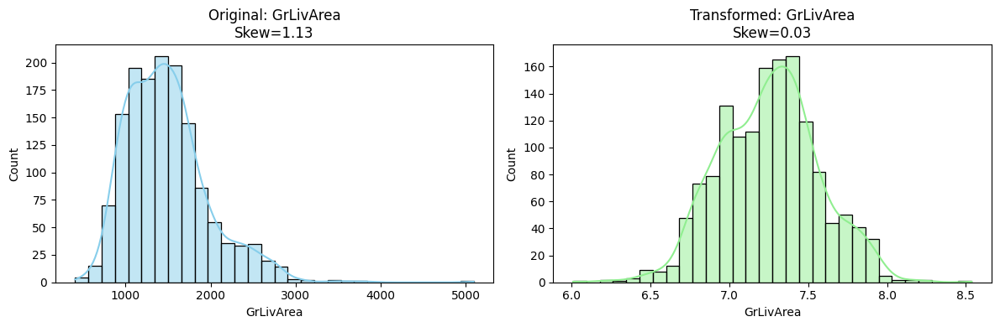
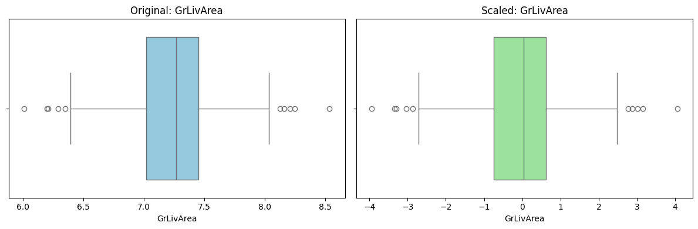
df_test
| OverallQual | GrLivArea | ExterQual | BsmtQual | KitchenQual | GarageFinish | Neighborhood | Foundation_CBlock | Foundation_PConc | Foundation_Slab | Foundation_Stone | Foundation_Wood | |
|---|---|---|---|---|---|---|---|---|---|---|---|---|
| 0 | 5 | -1.442112 | 2 | 3 | 2 | 1 | 145847 | 1 | 0 | 0 | 0 | 0 |
| 1 | 6 | -0.194908 | 2 | 3 | 3 | 1 | 145847 | 1 | 0 | 0 | 0 | 0 |
| 2 | 5 | 0.449155 | 2 | 4 | 2 | 3 | 192850 | 0 | 1 | 0 | 0 | 0 |
| 3 | 6 | 0.400213 | 2 | 3 | 3 | 3 | 192850 | 0 | 1 | 0 | 0 | 0 |
| 4 | 8 | -0.313771 | 3 | 4 | 3 | 2 | 299722 | 0 | 1 | 0 | 0 | 0 |
| ... | ... | ... | ... | ... | ... | ... | ... | ... | ... | ... | ... | ... |
| 1454 | 4 | -0.816336 | 2 | 3 | 2 | 1 | 112409 | 1 | 0 | 0 | 0 | 0 |
| 1455 | 4 | -0.816336 | 2 | 3 | 2 | 1 | 112409 | 1 | 0 | 0 | 0 | 0 |
| 1456 | 5 | -0.455313 | 2 | 3 | 2 | 1 | 156471 | 1 | 0 | 0 | 0 | 0 |
| 1457 | 5 | -1.191104 | 2 | 4 | 2 | 1 | 156471 | 0 | 1 | 0 | 0 | 0 |
| 1458 | 7 | 1.098493 | 2 | 4 | 2 | 3 | 156471 | 0 | 1 | 0 | 0 | 0 |
1459 rows × 12 columns
Modeling#
Splitting the data#
Linear Regression#
X = df_train.drop(target,axis=1)
y = df_train[target]
X_train, X_test, y_train, y_test = train_test_split(X, y, test_size=0.2, random_state=42)
class RegressionTransformer:
"""
Fits a single regression model (or pipeline), performs optional hyperparameter tuning,
and evaluates standard regression metrics.
"""
def __init__(self, model, param_grid=None, search_type='grid', cv=5, scoring='r2', n_iter=10, random_state=42):
"""
model: sklearn estimator or pipeline
param_grid: dict of hyperparameters to tune
search_type: 'grid' or 'random'
cv: number of cross-validation folds
scoring: metric for selecting best hyperparameters
n_iter: for RandomizedSearchCV
"""
self.model = model
self.param_grid = param_grid
self.search_type = search_type
self.cv = cv
self.scoring = scoring
self.n_iter = n_iter
self.random_state = random_state
self.best_model = None
self.results = None
def fit(self, X_train, y_train):
# If hyperparameter grid is provided, do tuning
if self.param_grid:
if self.search_type == 'grid':
search = GridSearchCV(self.model, self.param_grid, cv=self.cv, scoring=self.scoring, n_jobs=-1)
elif self.search_type == 'random':
search = RandomizedSearchCV(self.model, self.param_grid, cv=self.cv, scoring=self.scoring,
n_iter=self.n_iter, n_jobs=-1, random_state=self.random_state)
else:
raise ValueError("search_type must be 'grid' or 'random'")
search.fit(X_train, y_train)
self.best_model = search.best_estimator_
self.best_params_ = search.best_params_
else:
self.model.fit(X_train, y_train)
self.best_model = self.model
self.best_params_ = None
return self
def evaluate(self, X_test, y_test):
if self.best_model is None:
raise ValueError("Model not fitted yet. Call fit() first.")
y_pred = self.best_model.predict(X_test)
metrics = {
"MSE": mean_squared_error(y_test, y_pred),
"RMSE": mean_squared_error(y_test, y_pred),
"MAE": mean_absolute_error(y_test, y_pred),
"MedianAE": float(median_absolute_error(y_test, y_pred)),
"R2": r2_score(y_test, y_pred)
}
self.results = pd.DataFrame(metrics, index=[0])
return metrics
def fit_evaluate(self, X_train, X_test, y_train, y_test):
self.fit(X_train, y_train)
return self.evaluate(X_test, y_test)
# ───────────────────────────────────────────────────────────────
# ✅ 2. New Manager Class to Add & Train Models One-by-One
# ───────────────────────────────────────────────────────────────
class RegressionManager:
"""
Manages multiple models, allows adding them dynamically,
trains only the newly added ones, and stores results.
"""
def __init__(self):
self.models = {}
self.trained_models = set()
self.all_results = []
def add_model(self, name, model, param_grid=None, search_type='grid',
cv=5, scoring='r2', n_iter=10, random_state=42):
"""
Adds a model but does NOT train it immediately.
"""
self.models[name] = {
"model": model,
"param_grid": param_grid,
"search_type": search_type,
"cv": cv,
"scoring": scoring,
"n_iter": n_iter,
"random_state": random_state
}
print(f"✅ Model '{name}' added.")
def train_model(self, name, X_train, X_test, y_train, y_test):
"""
Trains ONLY the specified model if not already trained.
"""
if name not in self.models:
print(f"❌ Model '{name}' not found.")
return
if name in self.trained_models:
print(f"⏭ Model '{name}' already trained. Skipping.")
return
cfg = self.models[name]
print(f"▶ Training model: {name}")
transformer = RegressionTransformer(
model=cfg["model"],
param_grid=cfg["param_grid"],
search_type=cfg["search_type"],
cv=cfg["cv"],
scoring=cfg["scoring"],
n_iter=cfg["n_iter"],
random_state=cfg["random_state"]
)
metrics = transformer.fit_evaluate(X_train, X_test, y_train, y_test)
self.all_results.append({
"Model": name,
"Best Params": transformer.best_params_,
**metrics
})
self.trained_models.add(name)
print(f"✅ Training complete for '{name}'.")
def get_results(self):
"""
Returns all training results in a DataFrame.
"""
return pd.DataFrame(self.all_results)
param_grid = {
'linereg__fit_intercept': [True, False] # only if inside a pipeline
}
line_reg = Pipeline([
('linereg', LinearRegression())
])
linereg_transformer = RegressionTransformer(model=line_reg, param_grid=param_grid, search_type='grid', cv=5)
linereg_transformer.fit_evaluate(X_train, X_test, y_train, y_test)
{'MSE': 0.028453771314668183,
'RMSE': 0.028453771314668183,
'MAE': 0.12330354265530116,
'MedianAE': 0.08812894320953557,
'R2': 0.847523602281904}
Stochastic Gradient Regressor#
sgd_pipeline = Pipeline([
('sgd', SGDRegressor(max_iter=1000, tol=1e-3, random_state=42))
])
# Hyperparameter grid
sgd_param_grid = {
'sgd__alpha': [0.0001, 0.001, 0.01], # regularization
'sgd__learning_rate': ['constant', 'optimal', 'invscaling'],
'sgd__eta0': [0.01, 0.1, 0.5] # initial learning rate
}
# Transformer
sgd_transformer = RegressionTransformer(model=sgd_pipeline,
param_grid=sgd_param_grid,
search_type='grid', cv=5)
# Fit and evaluate
sgd_transformer.fit_evaluate(X_train, X_test, y_train, y_test)
{'MSE': 3.2494651133265884e+37,
'RMSE': 3.2494651133265884e+37,
'MAE': 5.42511479068895e+18,
'MedianAE': 5.591130559357217e+18,
'R2': -1.7413042703947118e+38}
Huber Regressor#
huber_pipeline = Pipeline([
('huber', HuberRegressor(max_iter=1000))
])
# Hyperparameter grid
huber_param_grid = {
'huber__epsilon': [1.1, 1.35, 1.5],
'huber__alpha': [0.0001, 0.001, 0.01]
}
# Transformer
huber_transformer = RegressionTransformer(model=huber_pipeline,
param_grid=huber_param_grid,
search_type='grid', cv=5)
# Fit and evaluate
huber_transformer.fit_evaluate(X_train, X_test, y_train, y_test)
{'MSE': 2.57391656459322,
'RMSE': 2.57391656459322,
'MAE': 1.2937987168490097,
'MedianAE': 1.1144855604004134,
'R2': -12.792952837636443}
Ridge#
ridge_pipeline = Pipeline([
('ridge', Ridge())
])
ridge_param_grid = {
'ridge__alpha': [0.1, 1.0, 10.0],
'ridge__fit_intercept': [True, False]
}
ridge_transformer = RegressionTransformer(ridge_pipeline, ridge_param_grid, 'grid', cv=5)
ridge_transformer.fit_evaluate(X_train, X_test, y_train, y_test)
{'MSE': 0.028344833888090445,
'RMSE': 0.028344833888090445,
'MAE': 0.12253696523274939,
'MedianAE': 0.08816527294447862,
'R2': 0.8481073697620585}
lasso_pipeline = Pipeline([
('lasso', Lasso(max_iter=5000))
])
lasso_param_grid = {
'lasso__alpha': [0.001, 0.01, 0.1, 1.0],
'lasso__fit_intercept': [True, False]
}
lasso_transformer = RegressionTransformer(lasso_pipeline, lasso_param_grid, 'grid', cv=5)
lasso_transformer.fit_evaluate(X_train, X_test, y_train, y_test)
{'MSE': 0.028330155224078567,
'RMSE': 0.028330155224078567,
'MAE': 0.12256025750734387,
'MedianAE': 0.08921527991837319,
'R2': 0.8481860289242164}
ElasticNet#
en_pipeline = Pipeline([
('en', ElasticNet(max_iter=5000))
])
en_param_grid = {
'en__alpha': [0.001, 0.01, 0.1, 1.0],
'en__l1_ratio': [0.2, 0.5, 0.8],
'en__fit_intercept': [True, False]
}
en_transformer = RegressionTransformer(en_pipeline, en_param_grid, 'grid', cv=5)
en_transformer.fit_evaluate(X_train, X_test, y_train, y_test)
{'MSE': 0.028338292035089883,
'RMSE': 0.028338292035089883,
'MAE': 0.12261392738321758,
'MedianAE': 0.0887241687107263,
'R2': 0.848142425859505}
Decision Tree Regressor#
from sklearn.tree import DecisionTreeRegressor
dt_pipeline = Pipeline([
('dt', DecisionTreeRegressor(random_state=42))
])
dt_param_grid = {
'dt__max_depth': [None, 5, 10, 20],
'dt__min_samples_split': [2, 5, 10],
'dt__min_samples_leaf': [1, 2, 4]
}
dt_transformer = RegressionTransformer(dt_pipeline, dt_param_grid, 'grid', cv=5)
dt_transformer.fit_evaluate(X_train, X_test, y_train, y_test)
{'MSE': 0.030781148351952482,
'RMSE': 0.030781148351952482,
'MAE': 0.12579411934597917,
'MedianAE': 0.09471304646571355,
'R2': 0.8350517909760339}
Random Forest Regressor#
from sklearn.ensemble import RandomForestRegressor
rf_pipeline = Pipeline([
('rf', RandomForestRegressor(random_state=42,n_jobs=-1))
])
rf_param_grid = {
'rf__max_depth': [None, 10, 20],
'rf__min_samples_split': [2, 5],
'rf__min_samples_leaf': [1, 2],
'rf__max_features': [1.0, 'sqrt', 0.8]
}
rf_transformer = RegressionTransformer(rf_pipeline, rf_param_grid, 'grid', cv=5)
rf_transformer.fit_evaluate(X_train, X_test, y_train, y_test)
{'MSE': 0.025205099184451164,
'RMSE': 0.025205099184451164,
'MAE': 0.1088619822511194,
'MedianAE': 0.07259573868793101,
'R2': 0.8649323955945609}
XGBoost Regressor#
from xgboost import XGBRegressor
from sklearn.pipeline import Pipeline
xgb_pipeline = Pipeline([
('xgb', XGBRegressor(objective='reg:squarederror', random_state=42))
])
xgb_param_grid = {
# 'xgb__n_estimators': [100, 200,500],
'xgb__max_depth': [3, 5, 7],
'xgb__learning_rate': [0.01, 0.05, 0.1],
'xgb__subsample': [0.7, 1.0],
'xgb__colsample_bytree': [0.7, 1.0]
}
xgb_transformer = RegressionTransformer(xgb_pipeline, xgb_param_grid, 'grid', cv=5)
xgb_transformer.fit_evaluate(X_train, X_test, y_train, y_test)
{'MSE': 0.024440628952774074,
'RMSE': 0.024440628952774074,
'MAE': 0.11124588509094908,
'MedianAE': 0.07981503747140106,
'R2': 0.8690289937502069}
xgb_transformer.best_params_
{'xgb__colsample_bytree': 0.7,
'xgb__learning_rate': 0.1,
'xgb__max_depth': 3,
'xgb__subsample': 1.0}
AdaBoost Tree Regressor#
from sklearn.ensemble import AdaBoostRegressor
from sklearn.pipeline import Pipeline
from sklearn.tree import DecisionTreeRegressor
# Using a DecisionTree as the base estimator
ada_pipeline = Pipeline([
('ada', AdaBoostRegressor(estimator=DecisionTreeRegressor(max_depth=3), random_state=42))
])
ada_param_grid = {
'ada__n_estimators': [50, 100, 200],
'ada__learning_rate': [0.01, 0.05, 0.1, 0.5],
'ada__estimator__max_depth': [1, 2, 3, 5]
}
ada_transformer = RegressionTransformer(ada_pipeline, ada_param_grid, 'grid', cv=5)
ada_transformer.fit_evaluate(X_train, X_test, y_train, y_test)
{'MSE': 0.027929996968740323,
'RMSE': 0.027929996968740323,
'MAE': 0.12249511176483593,
'MedianAE': 0.09006995864496137,
'R2': 0.8503303734687893}
Support Vectore Regressor#
from sklearn.exceptions import ConvergenceWarning
warnings.filterwarnings("ignore")
# svr_pipeline = Pipeline([
# ('svr', LinearSVR(max_iter=100))
# ])
# # Hyperparameter grid
# svr_param_grid = {
# # 'svr__kernel': ['linear'],
# 'svr__C': [0.1, 1, 10, 100], # Regularization parameter
# 'svr__epsilon': [0.01, 0.1, 0.2, 0.5], # Tube width
# # 'svr__degree': [2, 3, 4] # Only used for 'poly' kernel
# }
# # Transformer
# svr_transformer = RegressionTransformer(svr_pipeline, svr_param_grid, 'grid', cv=5)
# # Fit and evaluate
# svr_transformer.fit_evaluate(X_train, X_test, y_train, y_test)
# # print("SVR Metrics:", svr_metrics)
# # print("Best Params:", svr_transformer.best_params_)
Full Modeling Pipeline#
import numpy as np
import pandas as pd
from sklearn.model_selection import GridSearchCV, RandomizedSearchCV
from sklearn.metrics import mean_squared_error, mean_absolute_error, r2_score, median_absolute_error
# ───────────────────────────────────────────────────────────────
# ✅ 1. Base Class: RegressionTransformer (UNCHANGED)
# ───────────────────────────────────────────────────────────────
class RegressionTransformer:
"""
Fits a single regression model (or pipeline), performs optional hyperparameter tuning,
and evaluates standard regression metrics.
"""
def __init__(self, model, param_grid=None, search_type='grid', cv=5, scoring='r2', n_iter=10, random_state=42):
self.model = model
self.param_grid = param_grid
self.search_type = search_type
self.cv = cv
self.scoring = scoring
self.n_iter = n_iter
self.random_state = random_state
self.best_model = None
self.results = None
self.best_params_ = None
def fit(self, X_train, y_train):
if self.param_grid:
if self.search_type == 'grid':
search = GridSearchCV(self.model, self.param_grid, cv=self.cv, scoring=self.scoring, n_jobs=-1)
elif self.search_type == 'random':
search = RandomizedSearchCV(
self.model,
self.param_grid,
cv=self.cv,
scoring=self.scoring,
n_iter=self.n_iter,
n_jobs=-1,
random_state=self.random_state
)
else:
raise ValueError("search_type must be 'grid' or 'random'")
search.fit(X_train, y_train)
self.best_model = search.best_estimator_
self.best_params_ = search.best_params_
else:
self.model.fit(X_train, y_train)
self.best_model = self.model
self.best_params_ = None
return self
def evaluate(self, X_test, y_test):
if self.best_model is None:
raise ValueError("Model not fitted yet. Call fit() first.")
y_pred = self.best_model.predict(X_test)
metrics = {
"MSE": mean_squared_error(y_test, y_pred),
"RMSE": mean_squared_error(y_test, y_pred) ** 0.5,
"MAE": mean_absolute_error(y_test, y_pred),
"MedianAE": float(median_absolute_error(y_test, y_pred)),
"R2": r2_score(y_test, y_pred)
}
self.results = pd.DataFrame(metrics, index=[0])
return metrics
def fit_evaluate(self, X_train, X_test, y_train, y_test):
self.fit(X_train, y_train)
return self.evaluate(X_test, y_test)
# ───────────────────────────────────────────────────────────────
# ✅ 2. New Manager Class to Add & Train Models One-by-One
# ───────────────────────────────────────────────────────────────
class RegressionManager:
"""
Manages multiple models, allows adding them dynamically,
trains only the newly added ones, and stores results.
"""
def __init__(self):
self.models = {}
self.trained_models = set()
self.all_results = []
def add_model(self, name, model, param_grid=None, search_type='grid',
cv=5, scoring='r2', n_iter=10, random_state=42):
"""
Adds a model but does NOT train it immediately.
"""
self.models[name] = {
"model": model,
"param_grid": param_grid,
"search_type": search_type,
"cv": cv,
"scoring": scoring,
"n_iter": n_iter,
"random_state": random_state
}
print(f"✅ Model '{name}' added.")
def train_model(self, name, X_train, X_test, y_train, y_test):
"""
Trains ONLY the specified model if not already trained.
"""
if name not in self.models:
print(f"❌ Model '{name}' not found.")
return
if name in self.trained_models:
print(f"⏭ Model '{name}' already trained. Skipping.")
return
cfg = self.models[name]
print(f"▶ Training model: {name}")
transformer = RegressionTransformer(
model=cfg["model"],
param_grid=cfg["param_grid"],
search_type=cfg["search_type"],
cv=cfg["cv"],
scoring=cfg["scoring"],
n_iter=cfg["n_iter"],
random_state=cfg["random_state"]
)
metrics = transformer.fit_evaluate(X_train, X_test, y_train, y_test)
self.all_results.append({
"Model": name,
"Best Params": transformer.best_params_,
"Estimator":transformer.best_model,
**metrics
})
self.trained_models.add(name)
print(f"✅ Training complete for '{name}'.")
def get_results(self):
"""
Returns all training results in a DataFrame.
"""
return pd.DataFrame(self.all_results)
import warnings
warnings.filterwarnings("ignore")
# ──────────────────────────────
# Initialize manager
# ──────────────────────────────
manager = RegressionManager()
# ──────────────────────────────
# 1. Linear Regression
# ──────────────────────────────
lr_pipeline = Pipeline([('linreg', LinearRegression())])
lr_param_grid = {'linreg__fit_intercept': [True, False]}
manager.add_model("LinearRegression", lr_pipeline, lr_param_grid)
manager.train_model("LinearRegression", X_train, X_test, y_train, y_test)
# ──────────────────────────────
# 2. Ridge Regression
# ──────────────────────────────
ridge_pipeline = Pipeline([('ridge', Ridge())])
ridge_param_grid = {'ridge__alpha': [0.1, 1.0, 10.0], 'ridge__fit_intercept': [True, False]}
manager.add_model("Ridge", ridge_pipeline, ridge_param_grid)
manager.train_model("Ridge", X_train, X_test, y_train, y_test)
# ──────────────────────────────
# 3. Lasso Regression
# ──────────────────────────────
lasso_pipeline = Pipeline([('lasso', Lasso(max_iter=5000))])
lasso_param_grid = {'lasso__alpha': [0.001, 0.01, 0.1, 1.0], 'lasso__fit_intercept': [True, False]}
manager.add_model("Lasso", lasso_pipeline, lasso_param_grid)
manager.train_model("Lasso", X_train, X_test, y_train, y_test)
# ──────────────────────────────
# 4. ElasticNet Regression
# ──────────────────────────────
en_pipeline = Pipeline([('en', ElasticNet(max_iter=5000))])
en_param_grid = {'en__alpha': [0.001, 0.01, 0.1, 1.0],
'en__l1_ratio': [0.2, 0.5, 0.8],
'en__fit_intercept': [True, False]}
manager.add_model("ElasticNet", en_pipeline, en_param_grid)
manager.train_model("ElasticNet", X_train, X_test, y_train, y_test)
# ──────────────────────────────
# 5. SGD Regressor
# ──────────────────────────────
sgd_pipeline = Pipeline([('sgd', SGDRegressor(max_iter=1000, tol=1e-3, random_state=42))])
sgd_param_grid = {'sgd__alpha': [0.0001, 0.001, 0.01],
'sgd__learning_rate': ['constant', 'optimal', 'invscaling'],
'sgd__eta0': [0.01, 0.1, 0.5]}
manager.add_model("SGDRegressor", sgd_pipeline, sgd_param_grid)
manager.train_model("SGDRegressor", X_train, X_test, y_train, y_test)
# ──────────────────────────────
# 6. Huber Regressor
# ──────────────────────────────
huber_pipeline = Pipeline([('huber', HuberRegressor(max_iter=1000))])
huber_param_grid = {'huber__epsilon': [1.1, 1.35, 1.5],
'huber__alpha': [0.0001, 0.001, 0.01]}
manager.add_model("HuberRegressor", huber_pipeline, huber_param_grid)
manager.train_model("HuberRegressor", X_train, X_test, y_train, y_test)
# ──────────────────────────────
# 7. Decision Tree Regressor
# ──────────────────────────────
dt_pipeline = Pipeline([('dt', DecisionTreeRegressor(random_state=42))])
dt_param_grid = {'dt__max_depth': [None, 5, 10, 20],
'dt__min_samples_split': [2, 5, 10],
'dt__min_samples_leaf': [1, 2, 4]}
manager.add_model("DecisionTree", dt_pipeline, dt_param_grid)
manager.train_model("DecisionTree", X_train, X_test, y_train, y_test)
# ──────────────────────────────
# 8. Random Forest Regressor
# ──────────────────────────────
rf_pipeline = Pipeline([('rf', RandomForestRegressor(random_state=42, n_jobs=-1))])
rf_param_grid = {'rf__max_depth': [None, 10, 20],
'rf__min_samples_split': [2, 5],
'rf__min_samples_leaf': [1, 2],
'rf__max_features': [1.0, 'sqrt', 0.8]}
manager.add_model("RandomForest", rf_pipeline, rf_param_grid)
manager.train_model("RandomForest", X_train, X_test, y_train, y_test)
# ──────────────────────────────
# 9. AdaBoost Regressor
# ──────────────────────────────
ada_pipeline = Pipeline([('ada', AdaBoostRegressor(random_state=42))])
ada_param_grid = {'ada__n_estimators': [50, 100, 200],
'ada__learning_rate': [0.01, 0.05, 0.1, 0.5]}
manager.add_model("AdaBoost", ada_pipeline, ada_param_grid)
manager.train_model("AdaBoost", X_train, X_test, y_train, y_test)
# ──────────────────────────────
# 10. XGBoost Regressor
# ──────────────────────────────
xgb_pipeline = Pipeline([('xgb', XGBRegressor(objective='reg:squarederror', random_state=42))])
xgb_param_grid = {'xgb__max_depth': [3, 5, 7],
'xgb__learning_rate': [0.01, 0.05, 0.1],
'xgb__subsample': [0.7, 1.0],
'xgb__colsample_bytree': [0.7, 1.0]}
manager.add_model("XGBoost", xgb_pipeline, xgb_param_grid)
manager.train_model("XGBoost", X_train, X_test, y_train, y_test)
from sklearn.exceptions import ConvergenceWarning
warnings.filterwarnings("ignore", category=ConvergenceWarning)
# ──────────────────────────────
# 11. Linear SVR
# ──────────────────────────────
# svr_pipeline = Pipeline([('svr', LinearSVR(random_state=42,max_iter=10000))])
# svr_param_grid = {'svr__C': [0.1, 1, 10, 100],
# 'svr__epsilon': [0.01, 0.1, 0.2, 0.5]}
# manager.add_model("LinearSVR", svr_pipeline, svr_param_grid)
# manager.train_model("LinearSVR", X_train, X_test, y_train, y_test)
# ──────────────────────────────
# View all results
# ──────────────────────────────
models_df = manager.get_results()
models_df
✅ Model 'LinearRegression' added.
▶ Training model: LinearRegression
✅ Training complete for 'LinearRegression'.
✅ Model 'Ridge' added.
▶ Training model: Ridge
✅ Training complete for 'Ridge'.
✅ Model 'Lasso' added.
▶ Training model: Lasso
✅ Training complete for 'Lasso'.
✅ Model 'ElasticNet' added.
▶ Training model: ElasticNet
✅ Training complete for 'ElasticNet'.
✅ Model 'SGDRegressor' added.
▶ Training model: SGDRegressor
✅ Training complete for 'SGDRegressor'.
✅ Model 'HuberRegressor' added.
▶ Training model: HuberRegressor
✅ Training complete for 'HuberRegressor'.
✅ Model 'DecisionTree' added.
▶ Training model: DecisionTree
✅ Training complete for 'DecisionTree'.
✅ Model 'RandomForest' added.
▶ Training model: RandomForest
✅ Training complete for 'RandomForest'.
✅ Model 'AdaBoost' added.
▶ Training model: AdaBoost
✅ Training complete for 'AdaBoost'.
✅ Model 'XGBoost' added.
▶ Training model: XGBoost
✅ Training complete for 'XGBoost'.
| Model | Best Params | Estimator | MSE | RMSE | MAE | MedianAE | R2 | |
|---|---|---|---|---|---|---|---|---|
| 0 | LinearRegression | {'linreg__fit_intercept': True} | (LinearRegression()) | 2.845377e-02 | 1.686825e-01 | 1.233035e-01 | 8.812894e-02 | 8.475236e-01 |
| 1 | Ridge | {'ridge__alpha': 10.0, 'ridge__fit_intercept':... | (Ridge(alpha=10.0)) | 2.834483e-02 | 1.683592e-01 | 1.225370e-01 | 8.816527e-02 | 8.481074e-01 |
| 2 | Lasso | {'lasso__alpha': 0.001, 'lasso__fit_intercept'... | (Lasso(alpha=0.001, max_iter=5000)) | 2.833016e-02 | 1.683156e-01 | 1.225603e-01 | 8.921528e-02 | 8.481860e-01 |
| 3 | ElasticNet | {'en__alpha': 0.001, 'en__fit_intercept': True... | (ElasticNet(alpha=0.001, l1_ratio=0.8, max_ite... | 2.833829e-02 | 1.683398e-01 | 1.226139e-01 | 8.872417e-02 | 8.481424e-01 |
| 4 | SGDRegressor | {'sgd__alpha': 0.01, 'sgd__eta0': 0.01, 'sgd__... | (SGDRegressor(alpha=0.01, learning_rate='optim... | 3.249465e+37 | 5.700408e+18 | 5.425115e+18 | 5.591131e+18 | -1.741304e+38 |
| 5 | HuberRegressor | {'huber__alpha': 0.01, 'huber__epsilon': 1.5} | (HuberRegressor(alpha=0.01, epsilon=1.5, max_i... | 2.573917e+00 | 1.604343e+00 | 1.293799e+00 | 1.114486e+00 | -1.279295e+01 |
| 6 | DecisionTree | {'dt__max_depth': 10, 'dt__min_samples_leaf': ... | (DecisionTreeRegressor(max_depth=10, min_sampl... | 3.078115e-02 | 1.754456e-01 | 1.257941e-01 | 9.471305e-02 | 8.350518e-01 |
| 7 | RandomForest | {'rf__max_depth': 10, 'rf__max_features': 'sqr... | ((DecisionTreeRegressor(max_depth=10, max_feat... | 2.520510e-02 | 1.587611e-01 | 1.088620e-01 | 7.259574e-02 | 8.649324e-01 |
| 8 | AdaBoost | {'ada__learning_rate': 0.05, 'ada__n_estimator... | ((DecisionTreeRegressor(max_depth=3, random_st... | 3.117492e-02 | 1.765642e-01 | 1.301943e-01 | 9.230205e-02 | 8.329417e-01 |
| 9 | XGBoost | {'xgb__colsample_bytree': 0.7, 'xgb__learning_... | (XGBRegressor(base_score=None, booster=None, c... | 2.444063e-02 | 1.563350e-01 | 1.112459e-01 | 7.981504e-02 | 8.690290e-01 |
models_df = models_df.sort_values(by='R2', ascending=False).reset_index(drop=True)
models_df
| Model | Best Params | Estimator | MSE | RMSE | MAE | MedianAE | R2 | |
|---|---|---|---|---|---|---|---|---|
| 0 | XGBoost | {'xgb__colsample_bytree': 0.7, 'xgb__learning_... | (XGBRegressor(base_score=None, booster=None, c... | 2.444063e-02 | 1.563350e-01 | 1.112459e-01 | 7.981504e-02 | 8.690290e-01 |
| 1 | RandomForest | {'rf__max_depth': 10, 'rf__max_features': 'sqr... | ((DecisionTreeRegressor(max_depth=10, max_feat... | 2.520510e-02 | 1.587611e-01 | 1.088620e-01 | 7.259574e-02 | 8.649324e-01 |
| 2 | Lasso | {'lasso__alpha': 0.001, 'lasso__fit_intercept'... | (Lasso(alpha=0.001, max_iter=5000)) | 2.833016e-02 | 1.683156e-01 | 1.225603e-01 | 8.921528e-02 | 8.481860e-01 |
| 3 | ElasticNet | {'en__alpha': 0.001, 'en__fit_intercept': True... | (ElasticNet(alpha=0.001, l1_ratio=0.8, max_ite... | 2.833829e-02 | 1.683398e-01 | 1.226139e-01 | 8.872417e-02 | 8.481424e-01 |
| 4 | Ridge | {'ridge__alpha': 10.0, 'ridge__fit_intercept':... | (Ridge(alpha=10.0)) | 2.834483e-02 | 1.683592e-01 | 1.225370e-01 | 8.816527e-02 | 8.481074e-01 |
| 5 | LinearRegression | {'linreg__fit_intercept': True} | (LinearRegression()) | 2.845377e-02 | 1.686825e-01 | 1.233035e-01 | 8.812894e-02 | 8.475236e-01 |
| 6 | DecisionTree | {'dt__max_depth': 10, 'dt__min_samples_leaf': ... | (DecisionTreeRegressor(max_depth=10, min_sampl... | 3.078115e-02 | 1.754456e-01 | 1.257941e-01 | 9.471305e-02 | 8.350518e-01 |
| 7 | AdaBoost | {'ada__learning_rate': 0.05, 'ada__n_estimator... | ((DecisionTreeRegressor(max_depth=3, random_st... | 3.117492e-02 | 1.765642e-01 | 1.301943e-01 | 9.230205e-02 | 8.329417e-01 |
| 8 | HuberRegressor | {'huber__alpha': 0.01, 'huber__epsilon': 1.5} | (HuberRegressor(alpha=0.01, epsilon=1.5, max_i... | 2.573917e+00 | 1.604343e+00 | 1.293799e+00 | 1.114486e+00 | -1.279295e+01 |
| 9 | SGDRegressor | {'sgd__alpha': 0.01, 'sgd__eta0': 0.01, 'sgd__... | (SGDRegressor(alpha=0.01, learning_rate='optim... | 3.249465e+37 | 5.700408e+18 | 5.425115e+18 | 5.591131e+18 | -1.741304e+38 |
best_estimator = models_df.loc[0,"Estimator"]
results = best_estimator.predict(df_test)
results_df = pd.DataFrame({"Id":test_df.Id.values,"SalePrice":np.expm1(results)})
results_df.to_csv("submission.csv",index=False)
results_df
| Id | SalePrice | |
|---|---|---|
| 0 | 1461 | 118734.687500 |
| 1 | 1462 | 147402.562500 |
| 2 | 1463 | 171833.812500 |
| 3 | 1464 | 185956.625000 |
| 4 | 1465 | 212796.640625 |
| ... | ... | ... |
| 1454 | 2915 | 90633.726562 |
| 1455 | 2916 | 90633.726562 |
| 1456 | 2917 | 136445.328125 |
| 1457 | 2918 | 134039.812500 |
| 1458 | 2919 | 204354.281250 |
1459 rows × 2 columns